<!doctype html>
<html lang="en">
<head>
  <meta charset="utf-8">
  <meta name="viewport" content="width=device-width, initial-scale=1">
  <title>arxiv digest — 2026-08-19</title>
  <style>
:root {
  --bg: #ffffff;
  --fg: #1f2328;
  --muted: #59636e;
  --border: #d0d7de;
  --card: #f6f8fa;
  --link: #0969da;
}
body {
  max-width: 980px;
  margin: 0 auto;
  padding: 2rem 1rem 5rem;
  font-family: -apple-system, BlinkMacSystemFont, "Segoe UI", Helvetica, Arial, sans-serif;
  line-height: 1.55;
  color: var(--fg);
  background: var(--bg);
}
a { color: var(--link); }
img { max-width: 100%; height: auto; }
pre, code { background: var(--card); border-radius: 6px; }
pre { padding: 1rem; overflow-x: auto; }
blockquote { border-left: 4px solid var(--border); padding-left: 1rem; color: var(--muted); }
details { margin: 0.6rem 0; }
summary { cursor: pointer; font-weight: 600; }
.paper-figures-scroll {
  display: flex;
  gap: 1rem;
  overflow-x: auto;
  overscroll-behavior-x: contain;
  padding: 0.75rem 0.25rem 1rem;
  margin: 1rem 0 1.25rem;
  border-top: 1px solid var(--border);
  border-bottom: 1px solid var(--border);
  scroll-snap-type: x proximity;
}
.paper-figure-card {
  flex: 0 0 min(260px, 72vw);
  scroll-snap-align: start;
  background: var(--card);
  border: 1px solid var(--border);
  border-radius: 12px;
  padding: 0.55rem;
}
.paper-figure-card img {
  display: block;
  width: 100%;
  max-height: 240px;
  object-fit: contain;
  background: white;
  border-radius: 8px;
}
.paper-figure-caption {
  display: block;
  margin-top: 0.5rem;
  color: var(--muted);
  font-size: 0.85rem;
}
.figure-strip-hint {
  color: var(--muted);
  font-size: 0.9rem;
  margin-bottom: -0.3rem;
}
</style>
  <!-- MathJax: renders $...$ inline math and $$...$$ display math, plus
       \(...\) and \[...\]. Loaded from the official CDN; works offline
       once cached. Configured to skip code/pre blocks so arxiv IDs that
       look like dollar amounts don't get mangled. -->
  <script>
    window.MathJax = {
      tex: {
        inlineMath: [['$', '$'], ['\\(', '\\)']],
        displayMath: [['$$', '$$'], ['\\[', '\\]']],
        processEscapes: true,
        processEnvironments: true
      },
      options: {
        skipHtmlTags: ['script', 'noscript', 'style', 'textarea', 'pre', 'code'],
        ignoreHtmlClass: 'tex2jax_ignore',
        processHtmlClass: 'tex2jax_process'
      }
    };
  </script>
  <script id="MathJax-script" async
    src="https://cdn.jsdelivr.net/npm/mathjax@3/es5/tex-chtml.js"></script>
</head>
<body>
<header style="background-color: #333; color: white; padding: 15px; margin-bottom: 20px;">
  <h1 style="margin: 0; font-size: 24px;">
    <a href="https://ochelpan.github.io/arXiv_clean/" style="color: white; text-decoration: none;">Main</a>
  </h1>
</header>

<h1>Daily arXiv Report</h1>

<hr>
<p>
<a href="index.html">← Index</a>
 · <a href="papers_05.html">← Previous</a> · <a href="papers_07.html">Next →</a>
</p>
<hr>

<h2>Papers 101–120</h2>
<p><a id="paper-2608.15745"></a></p>
<h3 id="superconducting-hydride-mg2rhh6-experimentally-achieved-at-lower-pressure"><a href="http://arxiv.org/abs/2608.15745v1">Superconducting Hydride Mg2RhH6 Experimentally Achieved at Lower Pressure</a></h3>
<p><strong>Authors:</strong> Linjing Wu, Zelong Wang, Guiqi Liu, Yuanhao Su, Runteng Chen, Hongyu Liu, Jun Zhang, Wenmin Li, Sijia Zhang, Jingcheng Zhu, Jianfa Zhao, Zheng Deng, Shaomin Feng, Jing Song, Qingqing Liu, Haozhe Liu, Panpan Kong, Xiancheng Wang, Changqing Jin<br>
<strong>Type:</strong> experiment · <strong>Category:</strong> other · <strong>PDF:</strong> <a href="https://arxiv.org/pdf/2608.15745v1">https://arxiv.org/pdf/2608.15745v1</a><br>
<strong>Analysis basis:</strong> full PDF text, analyzed in chunks
<strong>Topic relevance:</strong> <code>analog quantum simulation</code> <strong>2/5</strong> · <code>quantum measurements</code> <strong>1/5</strong></p>
<div class="figure-strip-hint">↔ Scroll figures horizontally</div>
<div class="paper-figures-scroll">
<figure class="paper-figure-card">
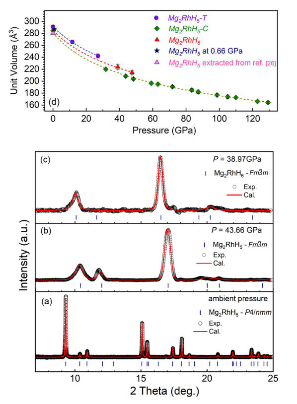
<figcaption class="paper-figure-caption"><b>Fig 1.</b> Figure 1 (a-c) Powder XRD data (represented by circles) and corresponding Rietveld</figcaption>
</figure>
<figure class="paper-figure-card">
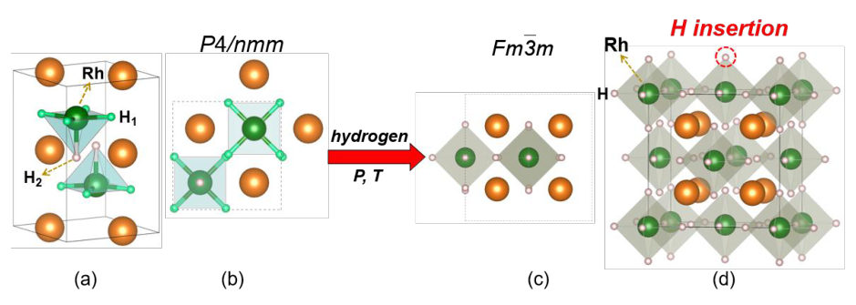
<figcaption class="paper-figure-caption"><b>Fig 2.</b> Figure 2 (a-b) Crystal structure sketch and coordination environment of Rh in Mg2RhH5</figcaption>
</figure>
<figure class="paper-figure-card">
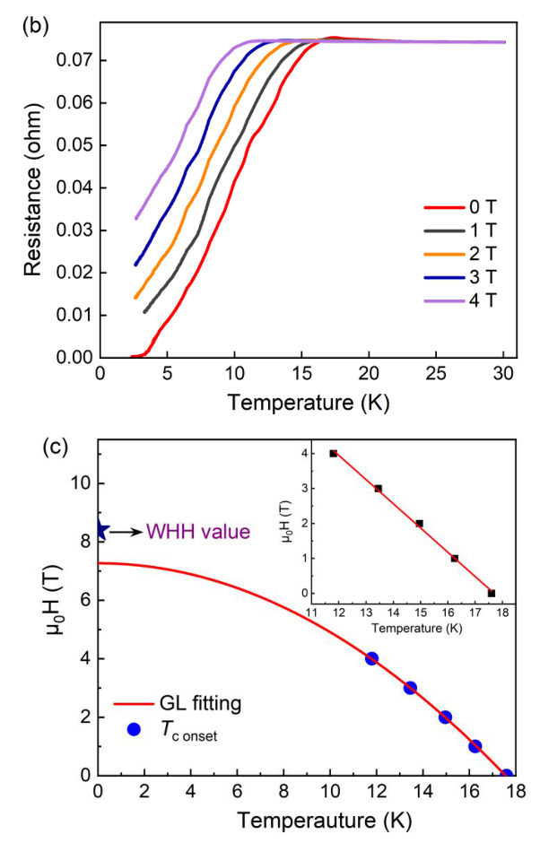
<figcaption class="paper-figure-caption"><b>Fig 3.</b> Figure 3 (a) The temperature dependent resistance of the Sample 4# measured at 55 GPa</figcaption>
</figure>
</div>

<p><strong>Summary.</strong> This work reports the successful experimental synthesis of $   ext{Mg}_2   ext{RhH}_6$, a superconducting hydride material. By utilizing a two-step high-pressure process, they achieved superconductivity up to 29 K at pressures significantly lower than previously required for similar materials. This research pioneers a rational design pathway for discovering high-$T_c$ superconductors.</p>
<p><strong>Why it may be interesting.</strong> While focused on solid-state physics, the study's emphasis on electronic structure modification via chemical doping/hydrogenation to induce superconductivity relates conceptually to tuning quantum states in engineered materials, which has parallels with controlling interactions in AMO systems.</p>
<details>
<summary>Detailed structure</summary>
<p><strong>Main problem.</strong> The primary challenge is achieving high critical temperature ($T_c$) superconductivity in hydride materials without requiring prohibitively high external pressures.</p>
<p><strong>Main result.</strong> The authors report the experimental synthesis of $ ext{Mg}_2   ext{RhH}_6$, which exhibits superconductivity with a $T_c$ up to 29 K at accessible pressures (e.g., 53 GPa), suggesting a pathway toward ambient-pressure high-$T_c$ superconductors.</p>
<p><strong>Method.</strong> The study employs a two-step, high-pressure synthesis route involving precursor formation ($    ext{Mg}_2   ext{RhH}_5$) followed by hydrogen supplementation under controlled pressure and temperature conditions. Superconductivity is confirmed via resistivity measurements and magnetic field dependence studies.</p>
<p><strong>Model / system.</strong> The physical system is the metal hydride $  ext{Mg}_2   ext{RhH}_6$. The underlying mechanism is understood within the phonon-mediated BCS framework, involving structural transitions (e.g., RhH5 to RhH6) and electron doping into antibonding orbitals.</p>
<p><strong>Key observables.</strong> Zero resistivity transition, superconducting critical temperature ($T_c$), upper critical magnetic field ($H_{c2}$), volume expansion ($\sim 2.42 	ext{ Å}^3$).</p>
<p><strong>Important parameters / regimes.</strong> $T_c$ (up to 29 K), synthesis pressures (30 GPa to 53 GPa), ambient pressure stability.</p>
<p><strong>Assumptions / limitations.</strong> The superconducting behavior is attributed to the filling of antibonding orbitals following structural transition, and that $    ext{Mg}_2   ext{RhH}_6$ is thermodynamically stable above 30 GPa.</p>
<p><strong>Figures summary.</strong> Figures likely show XRD patterns confirming phase transitions ($   ext{Mg}_2   ext{RhH}_5$-T to $  ext{Mg}_2   ext{RhH}_5$-C) and electrical resistance vs. temperature/field curves demonstrating the superconducting transition.</p>
<p><strong>Paper structure.</strong> The paper follows a structure detailing the necessity of lower-pressure synthesis, presenting the two-step experimental methodology (precursor synthesis followed by hydrogenation), characterizing the resulting phase ($ ext{Mg}_2   ext{RhH}_6$), and confirming its superconducting properties under pressure.</p>
</details>
<details>
<summary>Abstract</summary>
<p>Although tremendous progress has been made in recent years in the field of polyhydride superconductors, the realization of high critical temperature superconductivity still relies on formidable high pressures. Searching for superconducting hydrides at lower pressures is of particular importance. Here we report the first experimental synthesis of the Mg2RhH6, which achieves superconductivity under a significantly reduced pressure of 30 GPa. The synthesis of Mg2RhH6 proceeds via a two step process (1) preparation of the Mg2RhH5 precursor containing hydrogen atoms stabilized by covalent bonding, followed by (2) hydrogen supplementation resulting in the filling of electrons into anti bonding orbitals above 30 GPa, which was accompanied by the structural transition from RhH5 square pyramid to RhH6 octahedron. Superconductivity is achieved at 30 GPa with a Tc of 24 K, which is further enhanced to 29 K at 53 GPa, evidenced by a sharp drop of resistivity to zero and characteristic suppression of Tc under applied magnetic fields. Our experiments prove the Mg2RhH6 superconductor to be thermodynamically stable above 30 GPa, making it the first case exhibiting a Tc of approximately 30 K at a readily accessible pressure. This study pioneers a highly promising pathway for the rational design and discovery of high temperature superconductors within phonon mediated BCS framework.</p>
</details>
<p><sub><a href="#top">↑ back to top</a></sub></p>

<p><a id="paper-2608.14889"></a></p>
<h3 id="antiferroquadrupolar-order-in-altermagnetic-cofmath978math"><a href="http://arxiv.org/abs/2608.14889v1">Antiferroquadrupolar Order in Altermagnetic CoF$_2$</a></h3>
<p><strong>Authors:</strong> Daniel Halliday, Laura Pöysti, Chung Xu, Daniel A. Mayoh, Didier Wermeille, Dharmalingam Prabhakaran, David R. Bowler, Roger D. Johnson<br>
<strong>Type:</strong> both · <strong>Category:</strong> strongly correlated electrons · <strong>PDF:</strong> <a href="https://arxiv.org/pdf/2608.14889v1">https://arxiv.org/pdf/2608.14889v1</a><br>
<strong>Analysis basis:</strong> full PDF text, analyzed in chunks
<strong>Topic relevance:</strong> <code>quantum measurements</code> <strong>2/5</strong></p>
<div class="figure-strip-hint">↔ Scroll figures horizontally</div>
<div class="paper-figures-scroll">
<figure class="paper-figure-card">
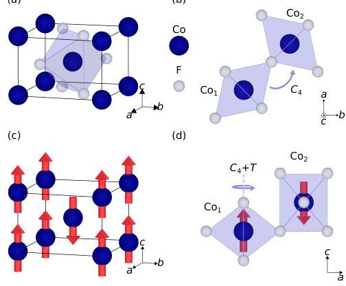
<figcaption class="paper-figure-caption"><b>Fig 1.</b> FIG. 1. (a) A single unit cell of CoF2 with lattice vectors labeled. (b) The two Co sites within the primitive unit cell. Co1 sits at [0,0,0] and Co2 at [ 1</figcaption>
</figure>
<figure class="paper-figure-card">
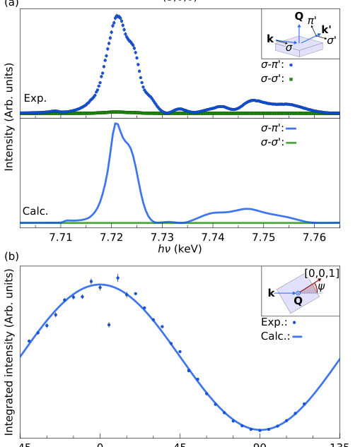
<figcaption class="paper-figure-caption"><b>Fig 2.</b> FIG. 2. (a) Experimental (Exp.) and calculated (Calc.) photon- energy dependence of the Q = (3, 0, 0) reflection within the: σ- π′ channel (blue circles/line) and σ-σ′ channel (green squares/line). The inset shows the scattering geometry for the REXS experiment, where k is the incident wavevector, k′ is the scattered wavevector, Q= k −k′ is the scattering vector and σ, σ′/π′ label the polar- ization of the incident and scattered X-rays, respectively. (b) Inte- grated intensity of the Q = (3, 0, 0) reflection (σ-π′ channel and hν = 7.722 keV) as a function of azimuthal angle (ψ). As de- fined within the inset, ψ is the angle between the [0,0,1] axis of CoF2 and the straight through X-ray...</figcaption>
</figure>
<figure class="paper-figure-card">
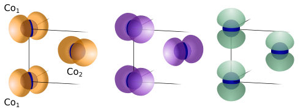
<figcaption class="paper-figure-caption"><b>Fig 3.</b> FIG. 3. (a) Calculated photon-energy dependence of the matrix ele- ments D Coα ij for: α = 1 (light blue dashed line) and α = 2 (dark blue line). Calculations are within the global coordinate system, x ∥ˆa, y ∥ˆb, z ∥ˆc. Schematic of the: (b) and (c) antiferro-type ordering of the local py and pz orbitals, respectively, and (d) the ferro-type ordering of the local px orbitals. The staggered orbital anisotropy of the local py and pz orbitals corresponds to the antifer- roquadrupolar (AFQ) order present within CoF2.</figcaption>
</figure>
<figure class="paper-figure-card">
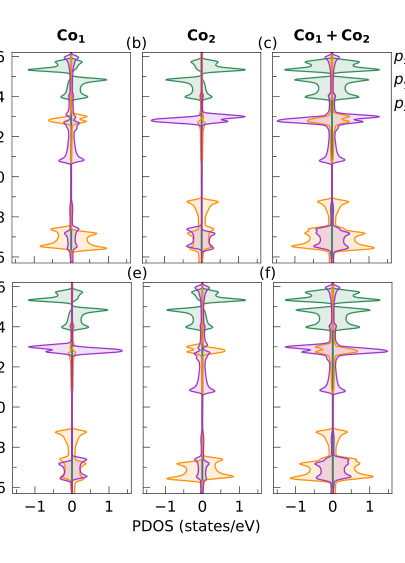
<figcaption class="paper-figure-caption"><b>Fig 4.</b> FIG. 4. Site and spin resolved projected density of states (PDOS) of Co for the local px (green), py (yellow) and pz (purple) orbitals of: (a) Co1 and (b) Co2, projected along the Γ −M direction. (c) Spin- polarized PDOS of the local p orbitals summed over both Co sites, projected along the Γ −M direction. (d) to (f) are as (a) to (c), but projected along the orthogonal Γ −M′ direction.</figcaption>
</figure>
</div>

<p><strong>Summary.</strong> The authors use resonant X-ray scattering and DFT calculations on CoF2 to prove that the material's altermagnetic properties originate from an underlying antiferroquadrupolar charge order. They successfully demonstrate that this specific quadrupolar arrangement dictates the spin-split electronic states, thereby establishing a fundamental link between charge and magnetic degrees of freedom in these materials.</p>
<p><strong>Why it may be interesting.</strong> This work provides a concrete experimental pathway (REXS) to probe hidden charge orders that underpin exotic electronic states like altermagnetism, which is crucial for understanding correlated materials beyond simple magnetism.</p>
<details>
<summary>Detailed structure</summary>
<p><strong>Main problem.</strong> To investigate charge order within CoF2, a d-wave altermagnetic compound, and establish that antiferroquadrupolar (AFQ) order is the microscopic origin of its altermagnetism.</p>
<p><strong>Main result.</strong> The study directly observes AFQ charge ordering using REXS and demonstrates via DFT calculations that this specific quadrupolar order parameter gives rise to the characteristic altermagnetic spin-splitting in CoF2.</p>
<p><strong>Method.</strong> The research combines resonant elastic X-ray scattering (REXS) measurements with detailed ab initio Density Functional Theory (DFT) calculations.</p>
<p><strong>Model / system.</strong> The system is CoF2, a rutile structure d-wave altermagnet. The theoretical framework posits that the altermagnetic order parameter decomposes into magnetic dipole and charge quadrupolar components ($O = L \otimes Q$).</p>
<p><strong>Key observables.</strong> The intensity of the REXS signal at the (3, 0, 0) reflection, its polarization/azimuthal dependence ($\propto \cos^2\psi$), and the resulting spin-splitting patterns in the local p orbitals.</p>
<p><strong>Important parameters / regimes.</strong> The temperature regime below the Néel temperature ($T < T_N \approx 37$ K), and the specific scattering vector Q = (3, 0, 0).</p>
<p><strong>Assumptions / limitations.</strong> The analysis assumes that the altermagnetic order parameter can be decomposed into distinct magnetic and charge degrees of freedom, which are then probed independently.</p>
<p><strong>Figures summary.</strong> Figure 1 shows the crystal structure and AFM ground state. Figure 2 presents REXS data showing photon-energy dependence and azimuthal fits confirming quadrupole order. Figure 3 details DFT calculations linking AFQ symmetry to spin-splitting in local p orbitals.</p>
<p><strong>Paper structure.</strong> The paper proceeds by introducing the theoretical concept of altermagnetism, presenting REXS measurements to detect charge quadrupolar order ($Q$), and finally using DFT calculations to rigorously link this observed $Q$ to the expected magnetic splitting pattern characteristic of altermagnetism.</p>
</details>
<details>
<summary>Abstract</summary>
<p>Altermagnets host non-relativistic spin-split electronic states whose microscopic origin is theoretically linked to a hidden charge order, yet experimental studies of this charge order are limited. We therefore investigate charge order within CoF$_2$, a $d$-wave altermagnetic compound with a rutile crystal structure and $Γ$-point antiferromagnetism. Combining resonant elastic X-ray scattering, symmetry analysis and ab initio calculations, we directly observe charge ordering and identify it as antiferroquadrupolar in nature. Via electronic structure calculations, we show that the experimentally observed antiferroquadrupolar order gives rise to the characteristic altermagnetic spin-splitting, thereby establishing empirical evidence for the decomposition of the altermagnetic order parameter into magnetic and charge degrees of freedom. We hence demonstrate that antiferroquadrupolar order is the microscopic origin of altermagnetism in CoF$_2$, with implications to the wider family of rutile altermagnets. Furthermore, our approach is applicable to studying altermagnetism in general, having demonstrated that resonant elastic X-ray scattering can serve as a direct probe of the charge multipoles that underpin spin-split electronic states in these materials.</p>
</details>
<p><sub><a href="#top">↑ back to top</a></sub></p>

<p><a id="paper-2608.14806"></a></p>
<h3 id="separable-counterexamples-to-complementary-quantum-correlations-and-why-random-search-missed-them"><a href="http://arxiv.org/abs/2608.14806v1">Separable Counterexamples to Complementary Quantum Correlations, and Why Random Search Missed Them</a></h3>
<p><strong>Authors:</strong> Lilong Qian<br>
<strong>Type:</strong> theory · <strong>Category:</strong> quantum information and computing · <strong>PDF:</strong> <a href="https://arxiv.org/pdf/2608.14806v1">https://arxiv.org/pdf/2608.14806v1</a><br>
<strong>Analysis basis:</strong> full PDF text, analyzed in chunks
<strong>Topic relevance:</strong> <code>quantum measurements</code> <strong>2/5</strong></p>
<div class="figure-strip-hint">↔ Scroll figures horizontally</div>
<div class="paper-figures-scroll">
<figure class="paper-figure-card">
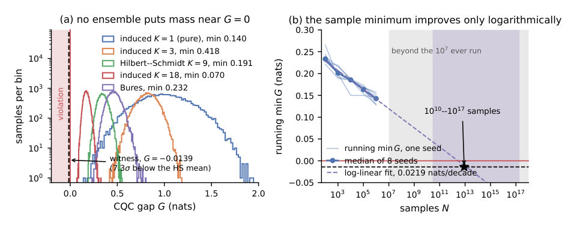
<figcaption class="paper-figure-caption"><b>Fig 1.</b> Figure 1: The gap is concentrated far from zero, and the sample minimum barely moves. (a) Distribution of G over 2 × 104 states from each of five standard ensembles on C3 ⊗C3; the shaded half-line is the violating region G &lt; 0. No ensemble places any mass there. The witness (45) (dashed) sits 7.3 standard deviations below the Hilbert–Schmidt mean, while the best of 2 × 104</figcaption>
</figure>
<figure class="paper-figure-card">
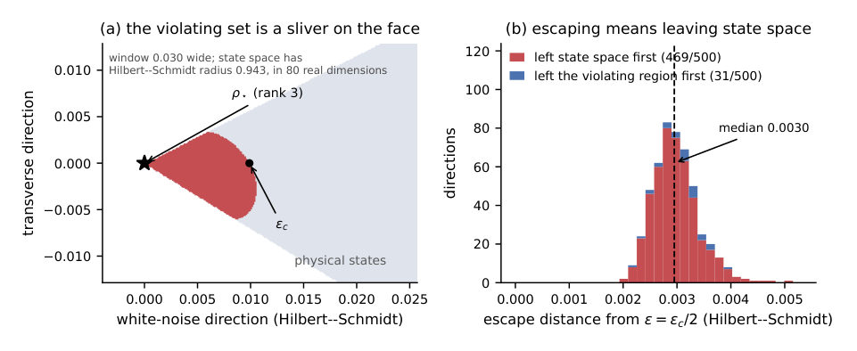
<figcaption class="paper-figure-caption"><b>Fig 2.</b> Figure 2: Where the counterexamples live. (a) A two-dimensional affine slice of state space through the witness ρ⋆. The horizontal axis is the white-noise direction I/9 −ρ⋆; the vertical axis is a transverse direction, taken to be the one realising the median escape distance of panel (b), so the slice is representative rather than chosen for effect. Light grey is the physical region, red the violating region G &lt; 0. The violating set is a lens pressed against the low-rank face, with ρ⋆itself at its vertex on the boundary; along the horizontal axis it terminates at εc. The scale annotation is essential to reading the panel: the window is 0.030 across, against a state-space Hilbert–Schmidt...</figcaption>
</figure>
<figure class="paper-figure-card">
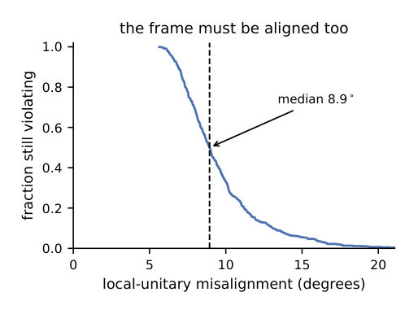
<figcaption class="paper-figure-caption"><b>Fig 3.</b> Figure 3: The measurement frame must be aligned too. Fraction of 600 random local-unitary rotation directions for which ρ⋆still violates CQC, against the rotation angle. Half the directions have lost the violation by about nine degrees, and essentially none survives past twenty. The curve is a distribution over directions at each angle, not a bound.</figcaption>
</figure>
</div>

<p><strong>Summary.</strong> This paper rigorously refutes the Complementary Quantum Correlations (CQC) inequality by constructing explicit counterexamples using separable states. The authors develop advanced mathematical tools to prove these violations across many dimension pairs. It highlights that detecting such subtle correlations requires highly targeted theoretical methods rather than brute-force numerical sampling.</p>
<p><strong>Why it may be interesting.</strong> It provides deep theoretical insights into the fundamental limits of quantum correlations beyond entanglement measures, which is crucial for understanding device characterization and resource quantification in quantum information protocols.</p>
<details>
<summary>Detailed structure</summary>
<p><strong>Main problem.</strong> The paper refutes the Complementary Quantum Correlations (CQC) relation, which bounds quantum mutual information using local measurements.</p>
<p><strong>Main result.</strong> Separable counterexamples to CQC are constructed for most dimension pairs ($m 	imes n$ with $m,n\ge3$), showing that entanglement is not required for the violation.</p>
<p><strong>Method.</strong> The authors use rigorous mathematical constructions, including closed-form proofs, entropy envelopes, and variance bounds derived from analyzing specific quantum correlation measures.</p>
<p><strong>Model / system.</strong> The study concerns bipartite quantum systems $
ho_{AB}$ on $\mathbb{C}^d \otimes \mathbb{C}^d$, involving local measurements using mutually unbiased bases (MUBs).</p>
<p><strong>Key observables.</strong> The CQC gap, $G(
ho) = I(A : B)_
ho - I(Q_A : Q_B) - I(R_A : R_B)$, and the triangular-discrimination sum ($S$).</p>
<p><strong>Important parameters / regimes.</strong> Local dimensions $m$ and $n$, with specific focus on pairs like $2 	imes n$ for $n\ge3$.</p>
<p><strong>Assumptions / limitations.</strong> The analysis distinguishes between rigorously proven results (closed form) and the limitations of previous numerical searches, which were shown to have negligible power.</p>
<p><strong>Figures summary.</strong> Figures illustrate the geometry of the violating set as a 'sliver' against the low-rank boundary in state space, and show how violation survival depends on local unitary misalignment angles.</p>
<p><strong>Paper structure.</strong> The paper systematically refutes CQC by constructing counterexamples for various dimensions, developing new mathematical machinery (like dimension-free entropy envelopes), and finally quantifying why previous random searches failed to find these states.</p>
</details>
<details>
<summary>Abstract</summary>
<p>The complementary quantum correlations (CQC) relation bounds the sum of two classical mutual informations, obtained from local mutually unbiased measurements, by the quantum mutual information of the premeasurement state. We refute it. Separable rank-two counterexamples exist in every local dimension pair \(m\times n\) with \(m,n\ge3\), with closed-form excess at least \(1/(8m^2n^2)\) nats, and in every qubit--qudit pair \(2\times n\) with \(n\ge3\) except \(n=3,5\); every covered pair also admits full-rank separable counterexamples. We then analyse the two residual qubit--qudit dimensions. A dimension-free entropy envelope replaces the natural quadratic majorant and lowers the requirement for closing the equal-prior orthogonal two-ray family from a triangular-discrimination bound \(S\le8/3\) to \(S\le3.8265583\ldots\); the associated gate matrix has trace exactly two, so its spectral test collapses to a single eigenvalue-free scalar; and the exact identity \(X=1-4\operatorname{Var}(c)\) turns the prime-Fourier full-spark barrier into a variance bound. A \(128\)-bit interval cover then closes that family at \(2\times3\) with gap at least \(0.012021\) nats, and at \(2\times5\) an exact saturator attaining \(S=(14+2\sqrt5)/5\) refutes three competing routes. We also give a state-dependent corrected inequality that is universal, and show it is incomparable with CQC already at \(2\times2\). Finally we quantify why the original searches had essentially no power to find these states: the violating set is a sliver against the low-rank boundary, the witness lies \(7.3\) standard deviations below the Hilbert--Schmidt mean, the bases must be aligned to about nine degrees (\(\sim10^{-21}\) of frames), and extrapolating the sample minimum demands \(10^{10}\) to \(10^{18}\) samples against the \(10^7\) ever run.</p>
</details>
<p><sub><a href="#top">↑ back to top</a></sub></p>

<p><a id="paper-2608.15557"></a></p>
<h3 id="intrinsic-wannier-functions-for-hamiltonian-downfolding"><a href="http://arxiv.org/abs/2608.15557v1">Intrinsic Wannier Functions for Hamiltonian downfolding</a></h3>
<p><strong>Authors:</strong> Shuoxue Li, Garnet Kin-Lic Chan<br>
<strong>Type:</strong> theory · <strong>Category:</strong> strongly correlated electrons · <strong>PDF:</strong> <a href="https://arxiv.org/pdf/2608.15557v1">https://arxiv.org/pdf/2608.15557v1</a><br>
<strong>Analysis basis:</strong> full PDF text, analyzed in chunks
<strong>Topic relevance:</strong> <code>Keldysh / 2PI / non-Gaussian methods</code> <strong>1/5</strong> · <code>analog quantum simulation</code> <strong>1/5</strong> · <code>driven-dissipative phase transition</code> <strong>1/5</strong> · <code>methods for driven-dissipative</code> <strong>1/5</strong> · <code>quantum measurements</code> <strong>1/5</strong></p>
<div class="figure-strip-hint">↔ Scroll figures horizontally</div>
<div class="paper-figures-scroll">
<figure class="paper-figure-card">
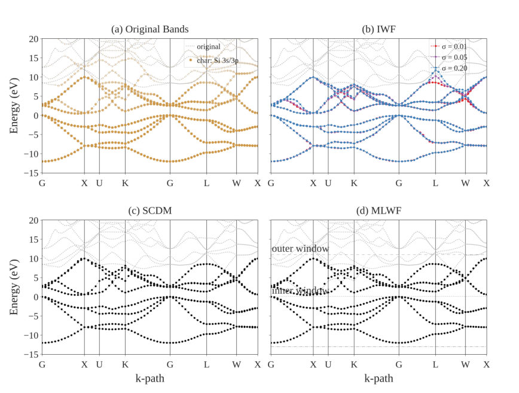
<figcaption class="paper-figure-caption"><b>Fig 1.</b> Figure 1. Comparison of FCC silicon band structure with different localization methods. (a) Original band structure showing the (total) Si 3s/3p character of the bands. (b) Intrinsic Wannier Function downfolding to the 3s/3p bands with different character smearings σ. (c) SCDM downfolding with chemical potential µ = 5eV; (d) MLWF downfolding with inner energy window [−13eV, 0.1eV] and outer energy window [−13eV, 11eV].</figcaption>
</figure>
<figure class="paper-figure-card">
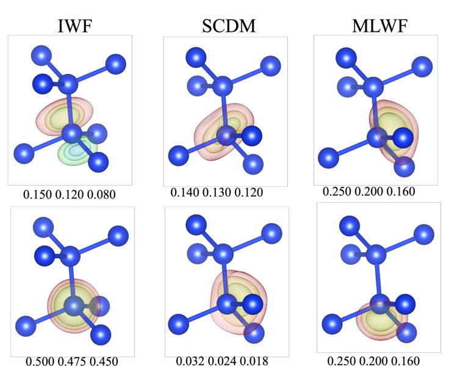
<figcaption class="paper-figure-caption"><b>Fig 2.</b> Figure 2. Selected silicon Wannier function orbitals obtained from IWF (σ = 0.05), MLWF and SCDM. The three numbers under each orbital are the isosurface values.</figcaption>
</figure>
<figure class="paper-figure-card">
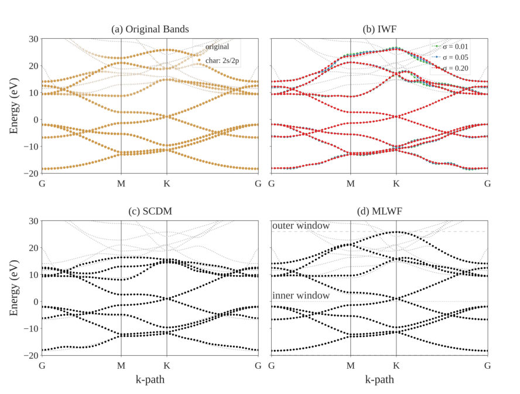
<figcaption class="paper-figure-caption"><b>Fig 3.</b> Figure 3. Comparison of graphene band structure with different localization methods. (a) Original bands showing the (total) C 2s/2p character. (b) Intrinsic Wannier Function downfolding to the 2s/2p bands. (c) SCDM downfolding with µ = 11.0eV. (d) MLWF downfolding with inner energy window [-20eV, 0] and outer energy window [-20eV, 26eV].</figcaption>
</figure>
<figure class="paper-figure-card">
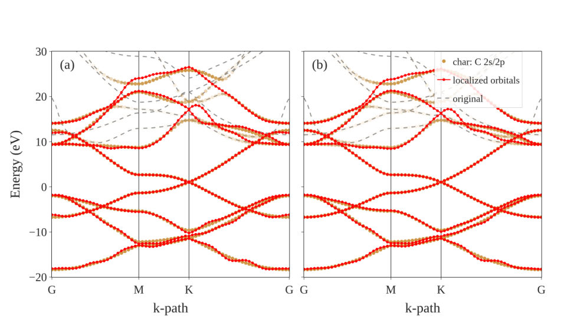
<figcaption class="paper-figure-caption"><b>Fig 4.</b> Figure 4. Variants of the IWF method using graphene as a benchmark. (a) IWF using the minimal B2 basis to the calculate character instead of the meta-L¨owdin orthogonalized B1 basis; (b) IWF using the scaled character matrix with parameter ε0 set to 1.0eV. The IWF smearing parameter σ = 0.05 for both cases.</figcaption>
</figure>
<figure class="paper-figure-card">
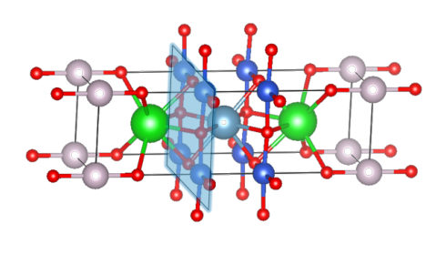
<figcaption class="paper-figure-caption"><b>Fig 5.</b> Figure 5. Illustration of the crystal structure and the CuO2 plane for the material HgBa2CaCu2O6.</figcaption>
</figure>
</div>

<p><strong>Summary.</strong> This paper introduces the Intrinsic Wannier Function (IWF) method for downfolding electronic band structures into simplified effective models. By using a non-iterative, character-based approach, IWF achieves high accuracy in reproducing material properties compared to established methods like MLWF and SCDM. This makes it a general and robust tool for simulating complex materials, particularly those relevant to strongly correlated electron physics.</p>
<p><strong>Why it may be interesting.</strong> While focused on solid-state physics, the development of robust, character-preserving projection methods like IWF is analogous to developing efficient basis set constructions or model reduction techniques applicable in open quantum systems or when mapping complex Hamiltonians onto smaller, manageable subspaces.</p>
<details>
<summary>Detailed structure</summary>
<p><strong>Main problem.</strong> The core problem is accurately downfolding complex, high-dimensional <em>ab initio</em> band structures into low-energy effective Hamiltonians that retain essential physics.</p>
<p><strong>Main result.</strong> The proposed Intrinsic Wannier Function (IWF) method provides highly accurate and robust downfolded band structures compared to standard techniques like MLWF and SCDM across various materials.</p>
<p><strong>Method.</strong> The IWF method constructs localized orbitals using a non-iterative, character-based smearing parameter ($\sigma$) applied during the projection of the Hamiltonian onto a low-energy subspace.</p>
<p><strong>Model / system.</strong> The work validates the method on diverse systems including Silicon (Si), Graphene, and the three-band model derived from cuprate superconductors (e.g., $   ext{HgBa}_2 ext{CaCu}_2 ext{O}_6$).</p>
<p><strong>Key observables.</strong> Downfolded band structures, orbital shapes, and the fidelity of reproducing original <em>ab initio</em> bands.</p>
<p><strong>Important parameters / regimes.</strong> The dimensionless character-based smearing parameter ($\sigma$) is crucial; MLWF methods are noted for sensitivity to energy windows.</p>
<p><strong>Assumptions / limitations.</strong> The method assumes that a sufficient atomic character basis can be defined via the projection operator $O$ and that using character-based smearing handles band crossings better than simple energy smearing.</p>
<p><strong>Figures summary.</strong> Figures compare downfolded band structures (IWF vs. MLWF vs. SCDM) for Si, Graphene, and Cuprates; they also show orbital shape comparisons in the cuprate plane.</p>
<p><strong>Paper structure.</strong> The paper introduces IWF as an improvement over existing Wannierization techniques by making the process non-iterative and parameter-efficient, validating its performance across multiple benchmark materials to establish it as a general tool for effective Hamiltonian construction.</p>
</details>
<details>
<summary>Abstract</summary>
<p>Downfolding ab initio material band structure into a low-energy subspace spanned by orbitals of specified atomic character, a procedure known as Wannier downfolding, is a common task in the simulation of complex materials. We introduce the Intrinsic Wannier Function (IWF) method to Wannierize bands with given atomic character. The method is non-iterative and requires only a single dimensionless parameter to disentangle bands. In benchmarks on silicon, graphene, and the three-band model of a mercury cuprate, we show that Intrinsic Wannier Functions provide high quality downfolded band structures compared to those from standard approaches such as Maximally Localized Wannier Functions and the Selected Columns of the Density Matrix method. Further, their straightforward implementation and robustness positions Intrinsic Wannier Functions as a general and useful tool for Wannier downfolding in materials electronic structure and in high-throughput applications.</p>
</details>
<p><sub><a href="#top">↑ back to top</a></sub></p>

<p><a id="paper-2608.16835"></a></p>
<h3 id="classical-limit-formula-for-matrix-elements-between-bound-states-of-distinct-one-dimensional-potentials"><a href="http://arxiv.org/abs/2608.16835v1">Classical-limit formula for matrix elements between bound states of distinct one-dimensional potentials</a></h3>
<p><strong>Authors:</strong> K. Beloy<br>
<strong>Type:</strong> theory · <strong>Category:</strong> other · <strong>PDF:</strong> <a href="https://arxiv.org/pdf/2608.16835v1">https://arxiv.org/pdf/2608.16835v1</a><br>
<strong>Analysis basis:</strong> full PDF text, analyzed in chunks
<strong>Topic relevance:</strong> <code>Keldysh / 2PI / non-Gaussian methods</code> <strong>1/5</strong> · <code>analog quantum simulation</code> <strong>1/5</strong> · <code>quantum measurements</code> <strong>1/5</strong></p>
<div class="figure-strip-hint">↔ Scroll figures horizontally</div>
<div class="paper-figures-scroll">
<figure class="paper-figure-card">
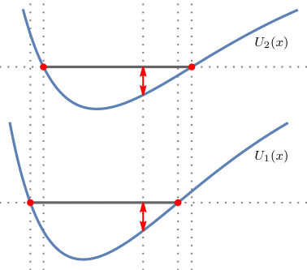
<figcaption class="paper-figure-caption"><b>Fig 1.</b> FIG. 1. Potentials U1(x) and U2(x) and bound-state energy levels E1 and E2 associated with the respective potentials. The points a1, b1, a2, and b2 are the CTPs [see Eq. (2)], indicated by circles. The point s is the COP [see Eq. (3)], indicated by arrows of equal length.</figcaption>
</figure>
<figure class="paper-figure-card">
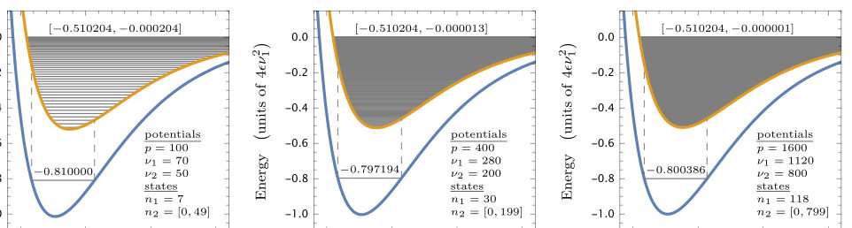
<figcaption class="paper-figure-caption"><b>Fig 2.</b> FIG. 2. Potentials and states used in the matrix element computations. The matrix elements are computed using analytical expressions given in Sec. V B. Results for the matrix elements are displayed in Figs. 3 and 4 below. The parameters p, ν1, and ν2 are specified within the respective panel. The parameter ratios are the same across all three panels (p : ν1 : ν2 = 10 : 7 : 5). From left to right, the panels represent a progression towards the classical limit. In each panel, curves depict the potentials U1(x) (blue, deeper) and U2(x) (yellow, shallower). For the states used in the matrix element computations, the energies are displayed as horizontal gray lines spanning between the respective...</figcaption>
</figure>
<figure class="paper-figure-card">
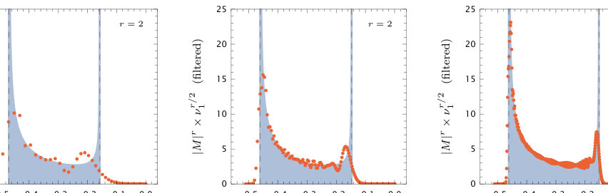
<figcaption class="paper-figure-caption"><b>Fig 3.</b> FIG. 3. Computed matrix elements with comparison to the CLF. These results are for t = 0, corresponding to the function f(x) = 1 (i.e., the matrix elements amount to the overlap integrals between wave functions). The states involved are specified in Fig. 2, with each panel of Fig. 2 corresponding to a column of panels here. As in Fig. 2, left to right represents a progression towards the classical limit. Top row: Results for the matrix elements M. Including a factor ν1/2 1 allows the results to be displayed on a common vertical scale across the row. Vertical dashed lines identify with U2(b1) and U2(a1), as labeled. Middle (r = 1) and bottom (r = 2) rows: Results for |M|r with a mean filter...</figcaption>
</figure>
<figure class="paper-figure-card">
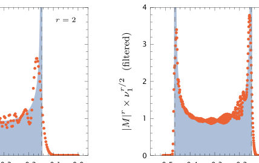
<figcaption class="paper-figure-caption"><b>Fig 4.</b> FIG. 4. Same as Figure 3, except with t = 1 rather than t = 0.</figcaption>
</figure>
</div>

<p><strong>Summary.</strong> The paper develops and rigorously validates a classical-limit formula for computing matrix elements connecting bound states of two distinct 1D potentials. By employing the WKB approximation and analyzing behavior near a Common Oscillation Point, the authors provide a general framework applicable to systems ranging from diatomic molecules to atoms in optical lattices.</p>
<p><strong>Why it may be interesting.</strong> This work provides a powerful theoretical tool (the CLF) applicable to calculating transition probabilities between electronic states described by different potential energy surfaces, directly relevant for modeling molecular or atomic excitations in structured environments like optical lattices.</p>
<details>
<summary>Detailed structure</summary>
<p><strong>Main problem.</strong> The primary goal is deriving a classical-limit formula (CLF) for calculating matrix elements between bound states associated with two distinct one-dimensional potentials.</p>
<p><strong>Main result.</strong> A specific, complex analytical formula was derived for the matrix element in the classical limit, which was strongly validated by showing that computed results converge to this formula as the quantum regime approaches the classical limit.</p>
<p><strong>Method.</strong> The derivation heavily utilizes the Wentzel–Kramers–Brillouin (WKB) approximation, focusing on analyzing integrals dominated near a Common Oscillation Point (COP).</p>
<p><strong>Model / system.</strong> The system involves particles confined by two distinct one-dimensional potentials, $U_1(x)$ and $U_2(x)$, which are envisioned as Born-Oppenheimer type potential energy curves. The analysis is applied to bound states governed by the time-independent Schrödinger equation.</p>
<p><strong>Key observables.</strong> The matrix element $M = \int \psi_1(x)f(x)\psi_2(x)dx$, and the density of states, $g(E)$.</p>
<p><strong>Important parameters / regimes.</strong> The classical limit ($\hbar 	o 0$), the existence of a Common Oscillation Point (COP), and parameters related to potential functional forms like $\alpha$ and $\epsilon$.</p>
<p><strong>Assumptions / limitations.</strong> The derivation relies on the WKB approximation, assuming that the matrix elements are dominated by contributions near the COP. The physical interpretation of the potentials is left general.</p>
<p><strong>Figures summary.</strong> Figures illustrate the comparison between computed matrix elements (for varying parameters $t$) and the derived Classical Limit Formula (CLF), showing clear convergence towards the CLF boundary.</p>
<p><strong>Paper structure.</strong> The paper develops the theory by first establishing the WKB framework for density of states, then deriving the general form of the CLF using approximations near the COP, and finally testing this formula with specific functional forms to confirm its validity.</p>
</details>
<details>
<summary>Abstract</summary>
<p>A classical-limit formula is derived for matrix elements between bound states of distinct one-dimensional potentials. We leave open the physical interpretation of the potentials, but generally envision them to be Born-Oppenheimer-type potentials with the position variable $x$ identifying with a slowly evolving degree of freedom of the system. For instance, $x$ could represent the internuclear separation in a diatomic molecule, with the potentials being potential energy curves for different electronic states. In this scenario, the matrix elements could be, e.g., conventional Franck-Condon factors. To test the derived formula, we assume functional forms for the potentials and operator that afford analytical solutions for the matrix elements. As the classical limit is approached, the computed matrix elements exhibit a clear tendency towards the classical-limit formula, providing strong validation for the formula. In future work, we anticipate using the formula to model inhomogeneous excitation spectra of atoms in one-dimensional optical lattices, with an eye towards improved optical lattice clock performance.</p>
</details>
<p><sub><a href="#top">↑ back to top</a></sub></p>

<p><a id="paper-2608.15112"></a></p>
<h3 id="probability-preserving-transformer-for-the-time-dependent-schrodinger-equation"><a href="http://arxiv.org/abs/2608.15112v1">Probability-Preserving Transformer for the Time-Dependent Schrödinger Equation</a></h3>
<p><strong>Authors:</strong> Mushtaq Ali, Muzamil Tariq, Niaz Ali Khan<br>
<strong>Type:</strong> theory · <strong>Category:</strong> numerical methods · <strong>PDF:</strong> <a href="https://arxiv.org/pdf/2608.15112v1">https://arxiv.org/pdf/2608.15112v1</a><br>
<strong>Analysis basis:</strong> full PDF text, analyzed in chunks
<strong>Topic relevance:</strong> <code>analog quantum simulation</code> <strong>1/5</strong> · <code>driven-dissipative phase transition</code> <strong>1/5</strong> · <code>methods for driven-dissipative</code> <strong>1/5</strong></p>
<div class="figure-strip-hint">↔ Scroll figures horizontally</div>
<div class="paper-figures-scroll">
<figure class="paper-figure-card">
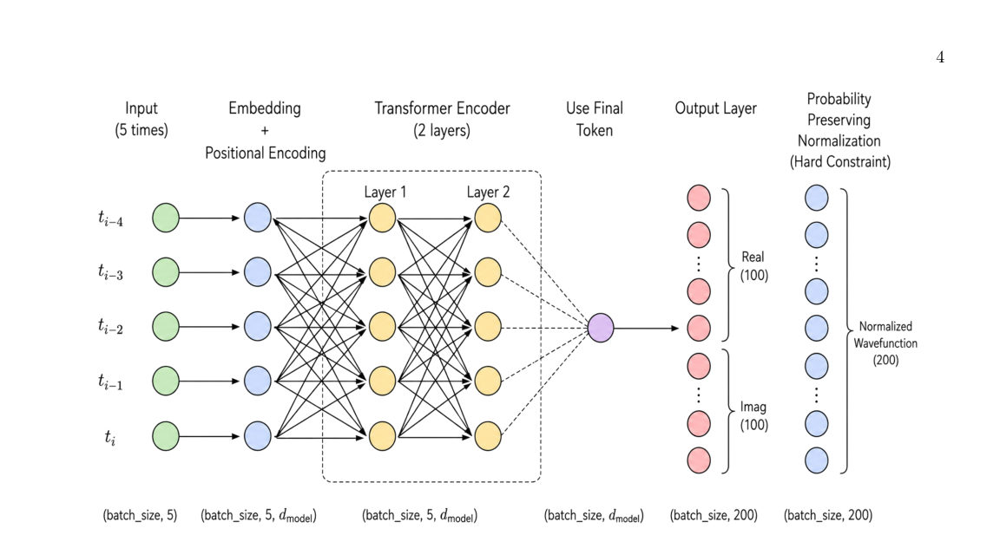
<figcaption class="paper-figure-caption"><b>Fig 1.</b> Figure 1:: Architectural schematic of the proposed multi-token PPT. The model comprises input time embeddings, a multi-head self-attention encoder, a linear output projection, and a final hard-normalization layer designed to preserve unit probability.</figcaption>
</figure>
<figure class="paper-figure-card">
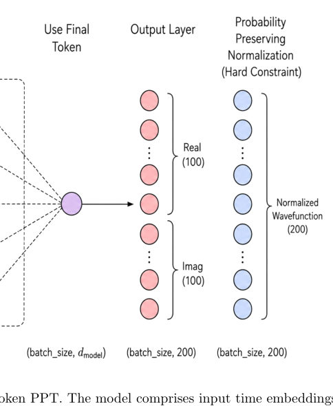
<figcaption class="paper-figure-caption"><b>Fig 2.</b> Figure 2:: Mean squared error (MSE) of the MLP as a function of training epochs, shown over 1, 000 iterations.</figcaption>
</figure>
<figure class="paper-figure-card">
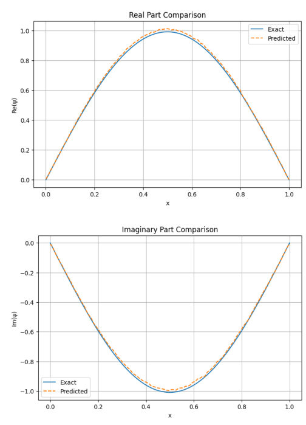
<figcaption class="paper-figure-caption"><b>Fig 3.</b> Figure 3:: Comparison of the real (Re(ψ), top) and imaginary (Im(ψ), bottom) components across the spatial domain.</figcaption>
</figure>
<figure class="paper-figure-card">
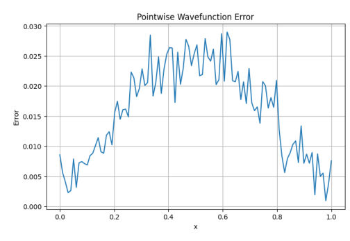
<figcaption class="paper-figure-caption"><b>Fig 4.</b> Figure 4:: Pointwise wavefunction error across the spatial domain grid points.</figcaption>
</figure>
<figure class="paper-figure-card">
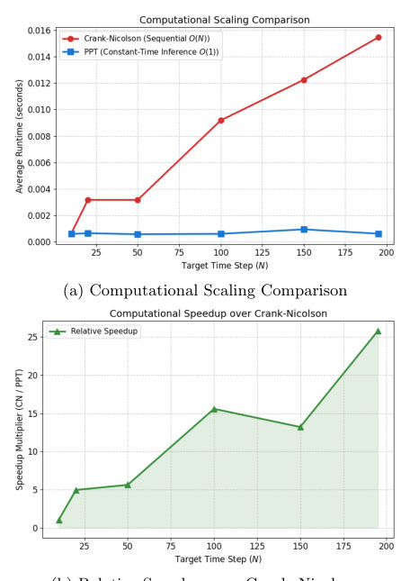
<figcaption class="paper-figure-caption"><b>Fig 5.</b> Figure 5:: Computational scaling and relative perfor- mance speedup of the proposed PPT framework versus the sequential Crank–Nicolson solver.</figcaption>
</figure>
</div>

<p><strong>Summary.</strong> This paper introduces a Probability-Preserving Transformer (PPT) to solve the computationally demanding Time-Dependent Schrödinger Equation. By implementing a hard normalization layer, the architecture guarantees that the predicted wavefunction always conserves probability ($\int |\psi|^2 dx = 1$). The PPT demonstrates both physical accuracy and superior computational scaling compared to established numerical methods like Crank–Nicolson.</p>
<p><strong>Why it may be interesting.</strong> For researchers in open quantum systems or many-body dynamics, this work provides a highly efficient, machine learning surrogate model for time evolution that respects fundamental physical symmetries (unitarity/probability conservation), which is crucial for long-term simulations.</p>
<details>
<summary>Detailed structure</summary>
<p><strong>Main problem.</strong> Traditional numerical solvers for the Time-Dependent Schrödinger Equation (TDSE) are computationally intensive, and standard Transformer models fail to rigorously guarantee probability conservation.</p>
<p><strong>Main result.</strong> The proposed Probability-Preserving Transformer (PPT) architecture enforces unit probability conservation as a hard constraint, achieving physical exactness and superior computational scaling compared to conventional methods.</p>
<p><strong>Method.</strong> The authors introduce a specialized Transformer model that incorporates a hard normalization layer post-prediction. This layer rescales the raw network output using the calculated total probability to ensure $\int |\Psi|^2 dx = 1$.</p>
<p><strong>Model / system.</strong> The system is governed by the TDSE, $i\hbarrac{\partial\psi}{\partial t} = \hat{H}\psi$, typically benchmarked on a 1D infinite potential well. The evolution is modeled as a linear time-stepping process.</p>
<p><strong>Key observables.</strong> Total Probability ($\int |\psi|^2 dx$), Mean Squared Error (MSE), Root Mean Squared Error (RMSE), and computational runtime scaling with prediction horizon.</p>
<p><strong>Important parameters / regimes.</strong> The simulation uses $\hbar=1, m=1, L=1$, and Dirichlet boundary conditions. The hard constraint requires a small stabilization constant $\epsilon$.</p>
<p><strong>Assumptions / limitations.</strong> The primary assumption is that enforcing probability conservation via an explicit architectural layer (hard constraint) is sufficient to yield physically accurate results, bypassing the need for complex penalty terms in the loss function.</p>
<p><strong>Figures summary.</strong> Figures compare wavefunction error and show computational scaling: CNM runtime scales linearly with prediction horizon ($N$), while PPT maintains near-constant inference time, demonstrating significant speedup for long-term predictions.</p>
<p><strong>Paper structure.</strong> The paper first establishes the physical problem (TDSE) and limitations of existing ML approaches. It then details the Multi-token PPT architecture, emphasizing the hard normalization layer. Results compare its performance metrics (probability conservation, MSE) and computational scaling against classical solvers like Crank–Nicolson Method.</p>
</details>
<details>
<summary>Abstract</summary>
<p>Solving the time-dependent Schrödinger equation (TDSE) via traditional numerical methods is computationally intensive. Transformer models offer a compelling alternative, but standard implementations rely on soft constraints that cannot rigorously guarantee probability conservation. Here, we introduce a Transformer architecture that enforces TDSE probability conservation as a hard constraint. The design intrinsically ensures unitarity across temporal evolution without requiring repeated retraining. Our empirical findings show that this hard-constraint approach is not only physically exact but also computationally superior to conventional soft-constraint methods.</p>
</details>
<p><sub><a href="#top">↑ back to top</a></sub></p>

<p><a id="paper-2608.16617"></a></p>
<h3 id="statistical-mechanics-of-a-quantum-harmonic-oscillator-with-folded-gaussian-frequency"><a href="http://arxiv.org/abs/2608.16617v1">Statistical Mechanics of a Quantum Harmonic Oscillator with Folded Gaussian Frequency</a></h3>
<p><strong>Authors:</strong> Liu Zhao<br>
<strong>Type:</strong> theory · <strong>Category:</strong> disordered systems and neural networks · <strong>PDF:</strong> <a href="https://arxiv.org/pdf/2608.16617v1">https://arxiv.org/pdf/2608.16617v1</a><br>
<strong>Analysis basis:</strong> full PDF text, analyzed in chunks
<strong>Topic relevance:</strong> <code>Keldysh / 2PI / non-Gaussian methods</code> <strong>1/5</strong> · <code>analog quantum simulation</code> <strong>1/5</strong> · <code>correlated / nonlocal dissipation</code> <strong>1/5</strong></p>
<div class="figure-strip-hint">↔ Scroll figures horizontally</div>
<div class="paper-figures-scroll">
<figure class="paper-figure-card">
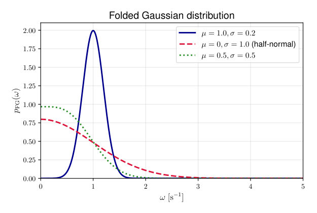
<figcaption class="paper-figure-caption"><b>Fig 1.</b> Figure 1: Folded Gaussian probability density pFG(ω; µ, σ) for three parameter sets. The solid blue curve (µ = 1.0 s−1, σ = 0.2 s−1) is sharply peaked near ω = µ, justifying the cumulant expansion of Sec. 4.1. The dashed red curve (µ = 0, σ = 1.0 s−1) is the half-normal distribution; its finite, nonzero value at ω = 0 is the soft-mode tail. The dotted green curve (µ = 0.5 s−1, σ = 0.5 s−1) interpolates between the two limits.</figcaption>
</figure>
<figure class="paper-figure-card">
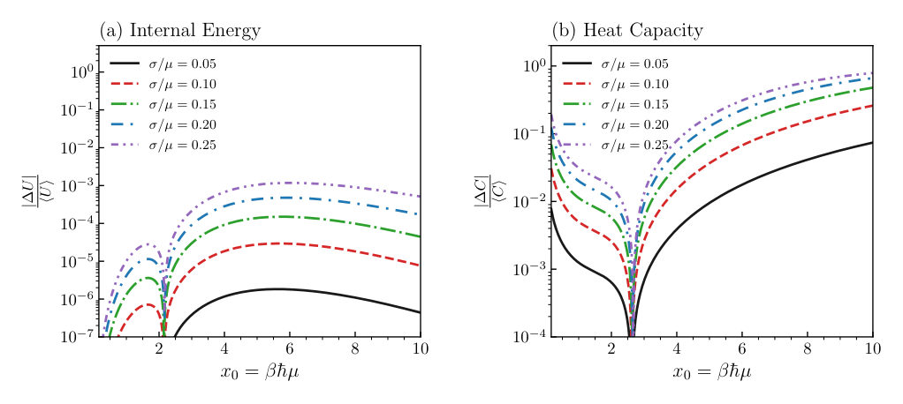
<figcaption class="paper-figure-caption"><b>Fig 2.</b> Figure 2: Relative errors of the cumulant expansion: (a) internal energy; (b) heat capacity. The expansion retains only the variance term. For U, errors remain below 10−3 for σ/µ ≤0.20; for C, deviation is stronger and errors can reach ∼80% at large σ/µ, confirming cumulant truncation is insufficient for heat capacity in the high-T regime.</figcaption>
</figure>
</div>

<p><strong>Summary.</strong> This paper provides a comprehensive statistical mechanics treatment of quantum harmonic oscillators whose frequencies are subject to folded Gaussian disorder. By deriving exact formulas and analyzing limiting cases ($\mu=0$ vs $\mu \gg \sigma$), the authors characterize how soft-mode disorder affects thermodynamic properties like heat capacity. The work is significant for establishing theoretical benchmarks regarding energy localization and the nature of thermal response in disordered quantum lattices.</p>
<p><strong>Why it may be interesting.</strong> The study provides a minimal yet rigorous benchmark for understanding soft-mode disorder in quantum systems. The distinction between power-law freeze-out due to single-site disorder versus true Lifshitz tails is crucial for interpreting experimental data on disordered materials, which has relevance across AMO physics and condensed matter.</p>
<details>
<summary>Detailed structure</summary>
<p><strong>Main problem.</strong> The paper tackles the statistical mechanics of a quantum harmonic oscillator whose frequency is randomly drawn from a folded Gaussian distribution, focusing on soft-mode disorder thermodynamics.</p>
<p><strong>Main result.</strong> It derives analytic approximations for thermodynamic quantities (e.g., heat capacity) in various limits ($\sigma \ll \mu$ and $\mu=0$), showing that the soft-mode kink leads to a power-law freeze-out rather than a true energy gap or Lifshitz tail.</p>
<p><strong>Method.</strong> The authors use ensemble averaging over the folded Gaussian probability distribution, deriving exact integral representations for key thermodynamic potentials and applying complementary analytic approximations (cumulant expansion vs. asymptotic analysis).</p>
<p><strong>Model / system.</strong> The model is a quantum harmonic oscillator ($\hat{H} = rac{\hat{p}^2}{2m} + rac{1}{2}m\omega^2\hat{x}^2$) where the frequency $\omega$ is random, governed by a folded Gaussian distribution $p_{FG}(\omega; \mu, \sigma)$. The model is extended to $N$ independent oscillators and a lattice structure.</p>
<p><strong>Key observables.</strong> Partition function ($Z$), internal energy ($U$), free energy ($F$), heat capacity ($C$), and entropy ($S$).</p>
<p><strong>Important parameters / regimes.</strong> The disorder parameters $\mu$ (mean frequency) and $\sigma$ (variance), and the temperature $T$ (or inverse temperature $eta$). Key regimes include small variance ($\sigma \ll \mu$) and zero-center case ($\mu=0$).</p>
<p><strong>Assumptions / limitations.</strong> The analysis relies on deriving exact integral representations and applying controlled analytic limits, such as cumulant expansions or low-frequency asymptotic analyses.</p>
<p><strong>Figures summary.</strong> Figure 1 compares the folded Gaussian PDF for different $(\mu, \sigma)$. Figure 2 shows relative errors in approximations for $U$ and $C$, indicating limitations of the cumulant expansion for heat capacity.</p>
<p><strong>Paper structure.</strong> The paper systematically derives exact integral forms for thermodynamic quantities for a single oscillator. It then analyzes specific limits ($\sigma \ll \mu$) using cumulant expansions, examines the $\mu=0$ case (soft-mode behavior), and finally extends the analysis to $N$ independent oscillators and a full lattice model.</p>
</details>
<details>
<summary>Abstract</summary>
<p>A self-contained statistical-mechanics treatment of a single quantum harmonic oscillator is presented, whose frequency $ω$ is drawn from a folded Gaussian distribution: $ω=|ξ|$ with $ξ\sim\mathcal{N}(μ,σ^2)$. The exact integral representations for the partition function, internal energy, free energy, heat capacity, and entropy are derived, and analytic approximations are given in two complementary limits---small variance ($σ\llμ$) via a cumulant expansion, and the zero-center case ($μ=0$) via low-frequency asymptotic analysis. The model is extended to $N$ independent oscillators, where the heat capacity is shown to be extensive with self-averaging fluctuations $\propto N^{-1/2}$, and finally to a disordered oscillator lattice, where the folded-Gaussian kink at $ω=0$ produces a soft-mode infrared tail. For a single isolated oscillator with $μ=0$, both $C$ and $S$ vanish linearly at low $T$. In the lattice case, the van Hove factor converts this to a $T^d$ power law. The oft-quoted ``third-law violation'' for disordered phonons is here shown to be a spectral property---the absence of an energy gap and a power-law freeze-out---driven by the single-site distribution kink rather than by a genuine Lifshitz tail (which requires rare large-scale spatial fluctuations). The folded Gaussian thus serves as a minimal benchmark for soft-mode disorder thermodynamics.</p>
</details>
<p><sub><a href="#top">↑ back to top</a></sub></p>

<p><a id="paper-2608.15870"></a></p>
<h3 id="a-certified-lower-bound-on-the-quantum-capacity-threshold-of-the-depolarizing-channel"><a href="http://arxiv.org/abs/2608.15870v1">A certified lower bound on the quantum-capacity threshold of the depolarizing channel</a></h3>
<p><strong>Authors:</strong> Artus Krohn-Grimberghe<br>
<strong>Type:</strong> theory · <strong>Category:</strong> quantum information and computing · <strong>PDF:</strong> <a href="https://arxiv.org/pdf/2608.15870v1">https://arxiv.org/pdf/2608.15870v1</a><br>
<strong>Analysis basis:</strong> full PDF text, analyzed in chunks
<strong>Topic relevance:</strong> <code>correlated / nonlocal dissipation</code> <strong>1/5</strong> · <code>quantum measurements</code> <strong>1/5</strong></p>
<div class="figure-strip-hint">↔ Scroll figures horizontally</div>
<div class="paper-figures-scroll">
<figure class="paper-figure-card">
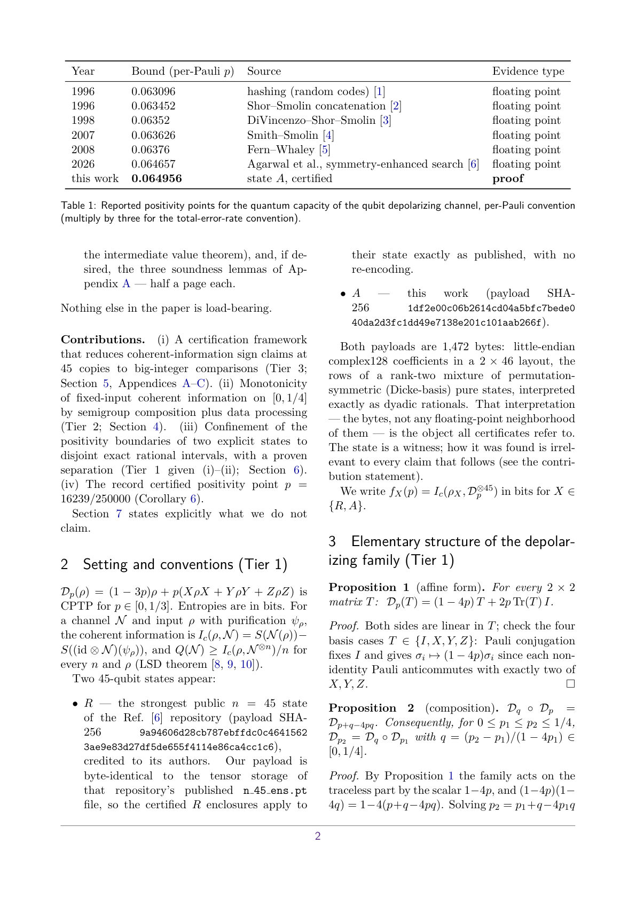
<figcaption class="paper-figure-caption"><b>Fig 1.</b> Low-resolution page preview, page 2</figcaption>
</figure>
<figure class="paper-figure-card">
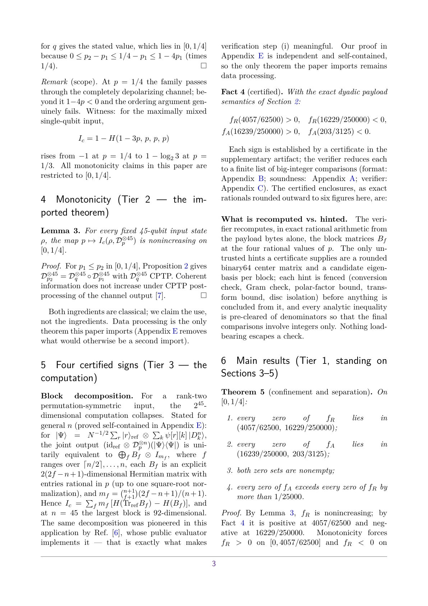
<figcaption class="paper-figure-caption"><b>Fig 2.</b> Low-resolution page preview, page 3</figcaption>
</figure>
<figure class="paper-figure-card">
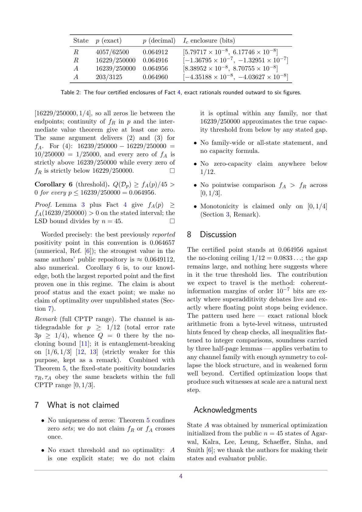
<figcaption class="paper-figure-caption"><b>Fig 3.</b> Low-resolution page preview, page 4</figcaption>
</figure>
<figure class="paper-figure-card">
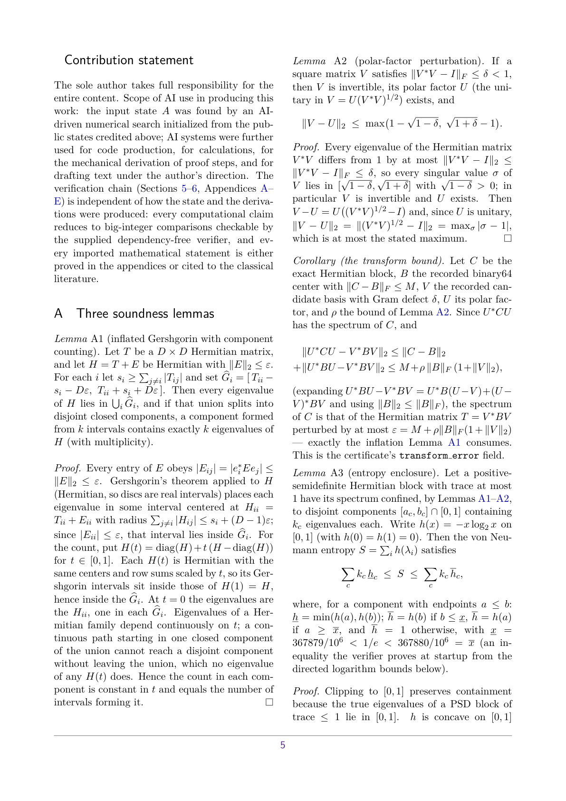
<figcaption class="paper-figure-caption"><b>Fig 4.</b> Low-resolution page preview, page 5</figcaption>
</figure>
<figure class="paper-figure-card">
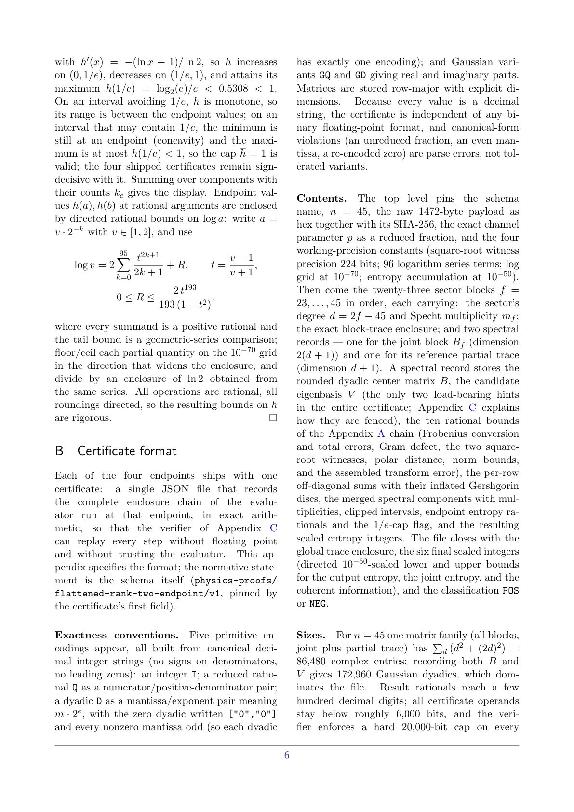
<figcaption class="paper-figure-caption"><b>Fig 5.</b> Low-resolution page preview, page 6</figcaption>
</figure>
</div>

<p><strong>Summary.</strong> This paper establishes the most rigorously proven lower bound on the noise threshold for the qubit depolarizing channel's positive quantum capacity. It achieves this by developing a novel mathematical framework that replaces floating-point approximations with verifiable proofs using exact rational arithmetic. This work is significant for setting new, provable benchmarks in quantum communication theory.</p>
<p><strong>Why it may be interesting.</strong> This work represents a significant methodological advance by applying rigorous, computationally verifiable proof techniques (exact rational arithmetic) to quantum capacity problems, setting a new standard for theoretical bounds in open quantum systems.</p>
<details>
<summary>Detailed structure</summary>
<p><strong>Main problem.</strong> The primary goal is to determine a certified lower bound on the noise threshold below which the quantum capacity of the qubit depolarizing channel remains positive.</p>
<p><strong>Main result.</strong> The authors provide a rigorously proven, certified lower bound for the positive quantum capacity at $p=0.064956$, surpassing previous numerical estimates and establishing a provable ordering between competing code states.</p>
<p><strong>Method.</strong> The proof relies on constructing explicit mathematical 'certificates' using exact rational arithmetic (big-integer comparisons) to certify that the coherent information remains positive, avoiding floating-point approximations entirely.</p>
<p><strong>Model / system.</strong> The system analyzed is the qubit depolarizing channel, $D_p(
ho)$, which models noise in quantum communication. The analysis uses concepts from quantum information theory involving tensor products and entropy calculations.</p>
<p><strong>Key observables.</strong> Quantum capacity ($Q$), Coherent Information ($I_c$), and the noise parameter $p$ (per-Pauli convention).</p>
<p><strong>Important parameters / regimes.</strong> The critical threshold value is certified at $p=16239/250000 = 0.064956$. The analysis is restricted to the interval $[0, 1/4]$ due to monotonicity.</p>
<p><strong>Assumptions / limitations.</strong> The claims are based on exact rational arithmetic proofs; no claim of optimality over all possible states or an exact threshold value is made.</p>
<p><strong>Figures summary.</strong> Not specified in detail, but the notes mention Table 1 comparing literature bounds and Table 2 showing certified enclosures for $I_c$ at specific rational points.</p>
<p><strong>Paper structure.</strong> The paper develops a rigorous framework involving multiple lemmas (A1-A3, E1-E4) to bound entropy using spectral confinement derived from exact matrix algebra. The structure culminates in the certification of the positive coherent information value via a dependency-free verifier.</p>
</details>
<details>
<summary>Abstract</summary>
<p>The noise threshold below which the qubit depolarizing channel retains positive quantum capacity has been studied since 1996, and every improvement to date -- most recently the record of Agarwal et al. -- rests on floating-point evaluation of the coherent information. We give the first proven positivity results in this regime: an explicit 45-copy rank-two input state A, published as a 1,472-byte witness, with certified $I_c>0$ at the exact rational $p=16239/250000=0.064956$ (per-Pauli convention; total error rate $3p=0.194868$), beyond the best previously reported numerical value. Because the depolarizing family is a semigroup under composition, fixed-input coherent information is nonincreasing in $p$ on $[0,1/4]$, so a single certified point extends to the entire interval below it. The same machinery confines the positivity boundaries of A and of the strongest public state of Agarwal et al. to disjoint rational intervals separated by more than $1/25000$ -- to our knowledge the first proven ordering of two competing code states. Every computational claim in the paper reduces to a finite list of big-integer comparisons, checkable by a dependency-free few-hundred-line verifier whose soundness rests on three self-contained half-page lemmas. Payloads, certificates, and verifier accompany the paper as a supplementary artifact.</p>
</details>
<p><sub><a href="#top">↑ back to top</a></sub></p>

<p><a id="paper-2608.14891"></a></p>
<h3 id="a-gauge-invariant-theory-of-small-markovian-errors-in-quantum-gate-sets"><a href="http://arxiv.org/abs/2608.14891v1">A gauge-invariant theory of small Markovian errors in quantum gate sets</a></h3>
<p><strong>Authors:</strong> Juan Gonzalez De Mendoza, Corey Ostrove, Timothy Proctor, Kevin Young, Erik Nielsen, Robin Blume-Kohout<br>
<strong>Type:</strong> theory · <strong>Category:</strong> quantum information and computing · <strong>PDF:</strong> <a href="https://arxiv.org/pdf/2608.14891v1">https://arxiv.org/pdf/2608.14891v1</a><br>
<strong>Analysis basis:</strong> full PDF text, analyzed in chunks
<strong>Topic relevance:</strong> <code>correlated / nonlocal dissipation</code> <strong>1/5</strong> · <code>quantum measurements</code> <strong>1/5</strong></p>
<div class="figure-strip-hint">↔ Scroll figures horizontally</div>
<div class="paper-figures-scroll">
<figure class="paper-figure-card">
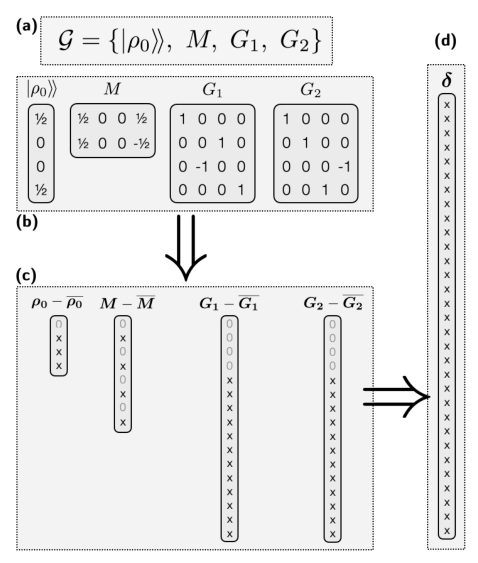
<figcaption class="paper-figure-caption"><b>Fig 1.</b> FIG. 1. We analyze gate sets G = {|ρ⟩⟩, M,G1, . . . ,GN} (a) containing operations that can be represented by Pauli transfer matrices (b). To analyze errors represented by small variations, we consider the dif- ference δ = G −G between the gate set and its target (c), and stack the vectorized differences to form a single vector δ ∈∆in error set space (d). Zero entries in panel (c) represent unvarying (and thus discardable) matrix elements. This figure illustrates a small 1-qubit gate set with 3 + 4 + 12 + 12 = 31 degrees of freedom.</figcaption>
</figure>
<figure class="paper-figure-card">
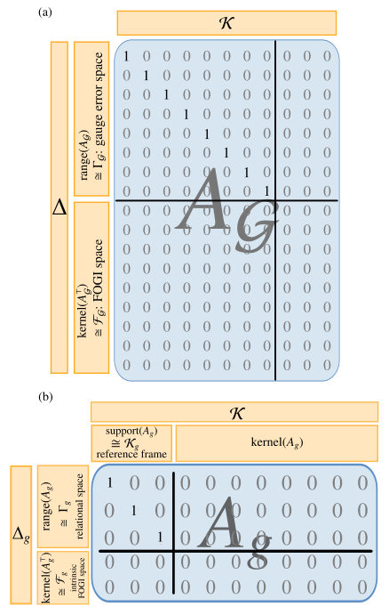
<figcaption class="paper-figure-caption"><b>Fig 2.</b> FIG. 2. Small gauge transformations, described by k ∈K, apply affine shifts to error set vectors δ ∈∆. (a) Gauge-induced shifts in a gate set G are described by a gauge action matrix AG : K →∆. As seen in the analysis that yields Lemma 1, the row space of AG is isomorphic to two fundamental subspaces. AG is shown in reduced row echelon form (RREF) to illustrate FG  kernel  A⊤ G  , the gate set’s FOGI space, and ΓG  range(AG), the gauge error space. The gauge action matrix for the entire gate set AG, in its original non- RREF form, is composed of stacked operation-specific gauge action matrices Ag. (b) For any Ag, shown here in its RREF, we focus on three fundamental subspaces: Fg ...</figcaption>
</figure>
<figure class="paper-figure-card">

<figcaption class="paper-figure-caption"><b>Fig 3.</b> FIG. 3. If a gate set contains π/2 rotations around the Pauli X (Gx) and Pauli Y (Gy) axes, but the actual rotation axes make an angle of π/2 −ϵ with each other instead of π/2, this is a pairwise relational error. Either gate in isolation behaves perfectly, but there is an ob- servable error that can be shifted between them by a gauge Z rotation.</figcaption>
</figure>
<figure class="paper-figure-card">
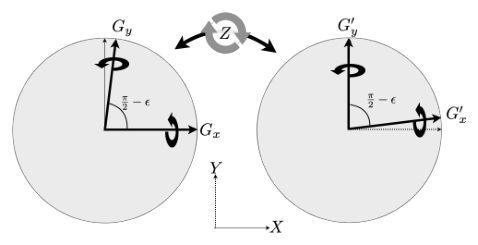
<figcaption class="paper-figure-caption"><b>Fig 4.</b> Figure 3 illustrates a simple example. Consider a single- qubit processor whose target gate set G = n</figcaption>
</figure>
<figure class="paper-figure-card">
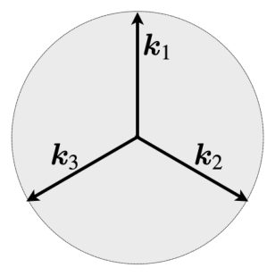
<figcaption class="paper-figure-caption"><b>Fig 5.</b> FIG. 4. If three operations g1, g2, g3 have distinct 1-dimensional gauge spaces k1, k2, k3 that span a 2-dimensional space, like the trine vectors illustrated here, then no pairwise FOGI relational operations can exist because no pair of gauge spaces intersects and so the equa- tion ki + k j = 0 has no nonzero solutions. But a 3-wise relational property exists, because k1 + k2 + k3 = 0.</figcaption>
</figure>
</div>

<p><strong>Summary.</strong> This paper tackles the ambiguity arising from gauge freedom when describing noisy quantum gates. It introduces First-Order Gauge-Invariant (FOGI) properties as a systematic, physically relevant way to parameterize small errors in gate sets. This provides essential tools for developing robust and unambiguous error characterization metrics for quantum computing hardware.</p>
<p><strong>Why it may be interesting.</strong> This work provides a rigorous mathematical framework for defining 'physical' error metrics in quantum computation that are independent of arbitrary choices (gauge fixing), which is crucial for comparing experimental results across different hardware platforms.</p>
<details>
<summary>Detailed structure</summary>
<p><strong>Main problem.</strong> The core challenge is developing a physically meaningful, gauge-invariant way to characterize small errors in quantum gate sets.</p>
<p><strong>Main result.</strong> The authors introduce First-Order Gauge-Invariant (FOGI) properties that provide coordinates for parameterizing gate sets without suffering from unphysical gauge ambiguities. They derive systematic methods to construct these basis elements.</p>
<p><strong>Method.</strong> The approach involves linearizing the error structure around a target gate set and identifying properties whose first-order deviation is insensitive to small gauge transformations, leading to kernel calculations on gauge action matrices.</p>
<p><strong>Model / system.</strong> The system models quantum computation using qubits, where operations are represented by superoperators (transfer matrices) acting on density matrices. The structure includes an initial state preparation, a sequence of logic gates, and a final measurement.</p>
<p><strong>Key observables.</strong> Gauge-invariant error metrics derived from FOGI properties; the dimension of the intrinsic FOGI space ($   ext{FG}$).</p>
<p><strong>Important parameters / regimes.</strong> The small error parameter $\epsilon$, which governs the linearization approximation ($O(\epsilon)$ vs $O(\epsilon^2)$).</p>
<p><strong>Assumptions / limitations.</strong> The analysis relies on assuming that errors are small (perturbative) and that the gate set is informationally complete (IC) for certain key theorems.</p>
<p><strong>Figures summary.</strong> Figure 1 illustrates the structure of a general 1-qubit gate set. Figure 8(d) shows the collection of 19 FOGI properties forming a basis for $ ext{FG}_7$.</p>
<p><strong>Paper structure.</strong> The paper systematically defines gauge freedom in quantum operations, introduces the concept of FOGI properties to quantify observable errors, and develops computational procedures using kernel analysis on gauge action matrices to construct bases for these invariant error spaces.</p>
</details>
<details>
<summary>Abstract</summary>
<p>Noisy logic operations on a quantum computational register -- e.g., one or more qubits -- can be described by transfer matrices (a.k.a. CPTP maps or superoperators) that act linearly on the density matrix representing the register's quantum state. Collectively, these operations form a gate set. Gate sets have a gauge freedom; many gate sets that appear different actually predict the same experimental outcomes. A property of a gate set can be observable (and thus physically relevant) only if it is gauge-invariant. Unfortunately, no good gauge-invariant parameterizations of gate sets are known. We introduce the next best thing, a perturbative gauge-invariant parameterization of small Markovian errors in gate sets. We construct vector spaces of properties that are first-order gauge-invariant (FOGI). We show how to construct and understand FOGI properties, how to use them as coordinates to parameterize gate sets without gauge freedom, and how to extract approximately gauge-invariant error metrics.</p>
</details>
<p><sub><a href="#top">↑ back to top</a></sub></p>

<p><a id="paper-2608.15588"></a></p>
<h3 id="a-general-purpose-solver-of-fourier-neural-swarm-operator-towards-accurate-and-efficient-mechanical-modeling-of-ultra-large-composite-materials"><a href="http://arxiv.org/abs/2608.15588v1">A General-purpose Solver of Fourier Neural Swarm Operator Towards Accurate and Efficient Mechanical Modeling of Ultra Large Composite Materials</a></h3>
<p><strong>Authors:</strong> Lekun Gao, Shaohua Chen<br>
<strong>Type:</strong> theory · <strong>Category:</strong> disordered systems and neural networks · <strong>PDF:</strong> <a href="https://arxiv.org/pdf/2608.15588v1">https://arxiv.org/pdf/2608.15588v1</a><br>
<strong>Analysis basis:</strong> full PDF text, analyzed in chunks
<strong>Topic relevance:</strong> <code>Keldysh / 2PI / non-Gaussian methods</code> <strong>1/5</strong> · <code>methods for driven-dissipative</code> <strong>1/5</strong></p>
<div class="figure-strip-hint">↔ Scroll figures horizontally</div>
<div class="paper-figures-scroll">
<figure class="paper-figure-card">
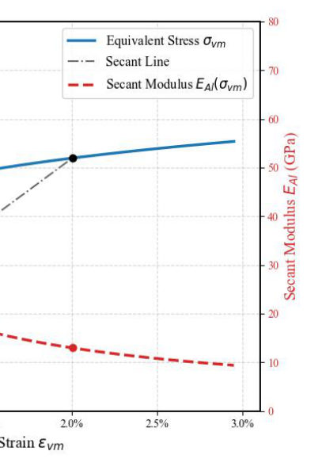
<figcaption class="paper-figure-caption"><b>Fig 1.</b> Figure 1: Nonlinear constitutive response of the aluminum (Al) matrix under the Ramberg–Osgood model based on the J2 invariant. The blue solid curve on the left vertical axis represents the evolution of the von Mises equivalent stress σvm with respect to the equivalent strain ϵvm. The red dashed curve on the right vertical axis shows the corresponding nonlinear degradation of the secant modulus EAl(σvm). The dash-dotted line illustrates, as an example, the state at σvm = 0.26Gpa (corresponding to an equivalent strain of approximately 2.0%).</figcaption>
</figure>
<figure class="paper-figure-card">
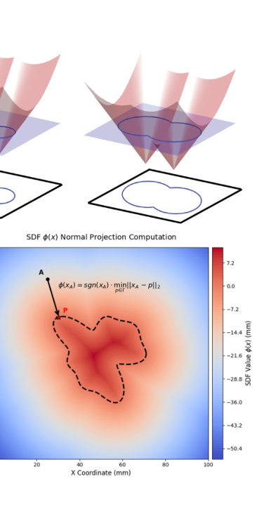
<figcaption class="paper-figure-caption"><b>Fig 2.</b> Figure 2: (a)Illustration of using LSM to compresses three-dimensional features into two dimen- sions [39]. (b) an example of using LSM to convert discontinuous composite microstructure into continuous signed distance field (SDF).</figcaption>
</figure>
<figure class="paper-figure-card">
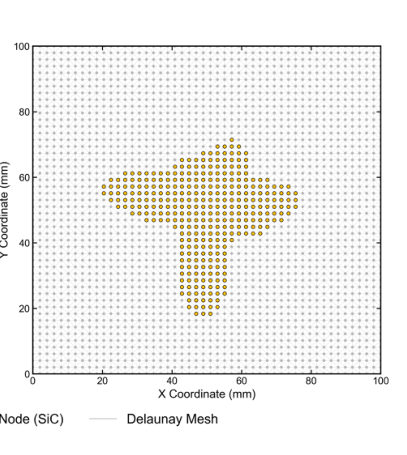
<figcaption class="paper-figure-caption"><b>Fig 3.</b> Figure 3: (a) schematic illustration of typical microstructure feature of SiC-Al composite, where the gray region represents the Al matrix and the yellow region of the reinforcement SiC particle, (b)the structured mesh discretization obtained by Delaunay triangulation.</figcaption>
</figure>
<figure class="paper-figure-card">
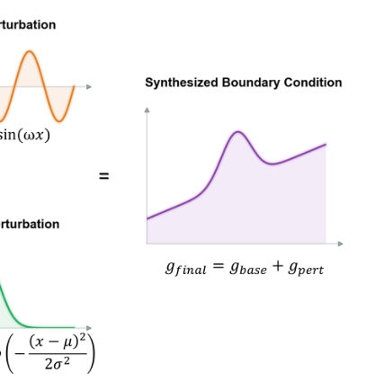
<figcaption class="paper-figure-caption"><b>Fig 4.</b> Figure 4: Schematic illustration of Dirichlet BC generation. The Dirichlet BC along each edge consists of two parts, gbase and gpert. gbase represents the base term which is a linear distribution, while gpert is an extra nonlinear term, which can take the form of trigonometric or Gaussian function.</figcaption>
</figure>
<figure class="paper-figure-card">
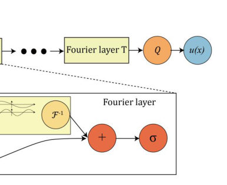
<figcaption class="paper-figure-caption"><b>Fig 5.</b> Figure 5: Schematic of the building-block FNO architecture [24]</figcaption>
</figure>
</div>

<p><strong>Summary.</strong> This paper introduces a novel FNO-swarm framework to overcome the computational bottlenecks in simulating large, heterogeneous composite materials. It trains local neural operators on microstructural components and assembles them globally using domain decomposition techniques like Schwarz iteration. The method achieves massive speedups while maintaining high accuracy compared to traditional finite element analysis.</p>
<p><strong>Why it may be interesting.</strong> While focused on classical mechanics, the core methodology—using neural operators to learn complex physical mappings across scales and domains—is highly relevant to developing scalable ML solvers for quantum many-body Hamiltonians or time evolution equations where traditional numerical methods fail due to size or complexity.</p>
<details>
<summary>Detailed structure</summary>
<p><strong>Main problem.</strong> Accurately and efficiently modeling the mechanical response of complex, heterogeneous composite materials with microstructures exhibiting distinct hierarchical features.</p>
<p><strong>Main result.</strong> The proposed FNO-swarm method achieves comparable accuracy to nonlinear finite element analysis while reducing computational cost by orders of magnitude for massive systems.</p>
<p><strong>Method.</strong> A two-scale framework that uses building-block Fourier Neural Operators (FNOs) trained on local microstructural features, which are then assembled into an FNO swarm synchronized via Schwarz iteration across the global domain.</p>
<p><strong>Model / system.</strong> The system involves composite media like SiC-Al composites with complex microstructures. The mechanical behavior is governed by elliptic differential equations describing stress and strain fields ($\sigma$, $\epsilon$).</p>
<p><strong>Key observables.</strong> Displacement field (u), Stress tensor ($\sigma$), Strain tensor ($\epsilon$), von Mises equivalent stress ($\sigma_{vm}$).</p>
<p><strong>Important parameters / regimes.</strong> The model handles extreme scales, such as composites with over a billion nodal points; material parameters include elastic moduli and plasticity parameters for the Al matrix.</p>
<p><strong>Assumptions / limitations.</strong> Assumes that local mechanical characteristics can be accurately encoded into building-block FNOs. Limitations noted include potential error accumulation at boundaries and reliance on level-set methods to smooth interfaces.</p>
<p><strong>Figures summary.</strong> Figures illustrate the application of Level Set Methods (LSM) to define microstructures, compare strain/displacement fields between the FNO-swarm and FEM for various domain sizes, and show constitutive relationships like the Ramberg–Osgood model.</p>
<p><strong>Paper structure.</strong> The paper reviews limitations in traditional multiscale methods (homogenization, domain decomposition) and existing ML solvers (PINNs). It then introduces the novel two-scale FNO swarm methodology, detailing local training via FNOs and global assembly/synchronization using Schwarz iteration, culminating in performance validation on large composites.</p>
</details>
<details>
<summary>Abstract</summary>
<p>Composite media with complex microstructures exhibit highly tailorable mechanical properties but remain challenging to model efficiently and accurately. Conventional homogenization often oversimplifies microstructural effects, whereas multiscale approaches typically require costly coupling across spatial and temporal scales. To address these limitations, we propose a two-scale neural-swarm framework for large-scale mechanical modeling of heterogeneous composites. At the local scale, the mechanical characteristics of representative microstructural features are encoded into building-block Fourier neural operators (FNOs) using level-set representations. At the global scale, these pretrained FNOs are assembled into an FNO swarm according to the spatial distribution of microstructural constituents. A coarse-mesh finite element model is employed to provide global physical guidance, while Schwarz iteration is used to synchronize neighboring FNOs and enforce consistency across shared interfaces. The proposed framework is validated through nonlinear simulations of SiC-Al composites with diverse microstructural configurations. Compared with nonlinear finite element analysis, the FNO-swarm method achieves comparable accuracy while reducing computational cost by orders of magnitude. For an extreme dual-property SiC-Al composite containing more than a billion nodal points, the proposed approach predicts the mechanical response within approximately one hour, demonstrating exceptional scalability. Furthermore, the framework naturally accommodates arbitrary Dirichlet boundary conditions and complex domain geometries. The proposed neural-swarm strategy provides a robust and scalable paradigm for large-scale mechanics simulations, reconciling the longstanding trade-off between computational efficiency and physical fidelity in heterogeneous materials modeling.</p>
</details>
<p><sub><a href="#top">↑ back to top</a></sub></p>

<p><a id="paper-2608.15464"></a></p>
<h3 id="a-minimal-qutrit-counterexample-to-conjecture-49-of-lesniewski-and-ruskai"><a href="http://arxiv.org/abs/2608.15464v1">A minimal qutrit counterexample to Conjecture 4.9 of Lesniewski and Ruskai</a></h3>
<p><strong>Authors:</strong> Domingos S. P. Salazar<br>
<strong>Type:</strong> theory · <strong>Category:</strong> quantum information and computing · <strong>PDF:</strong> <a href="https://arxiv.org/pdf/2608.15464v1">https://arxiv.org/pdf/2608.15464v1</a><br>
<strong>Analysis basis:</strong> full PDF text, analyzed in chunks
<strong>Topic relevance:</strong> <code>correlated / nonlocal dissipation</code> <strong>1/5</strong> · <code>quantum measurements</code> <strong>1/5</strong></p>
<div class="figure-strip-hint">↔ Scroll figures horizontally</div>
<div class="paper-figures-scroll">
<figure class="paper-figure-card">
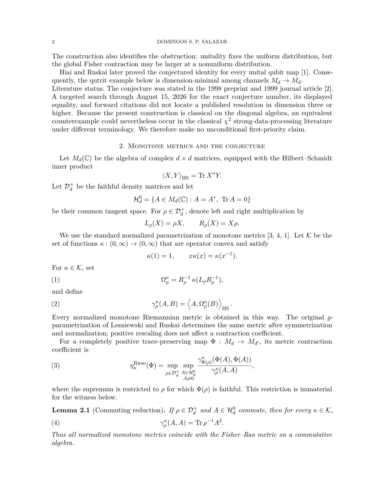
<figcaption class="paper-figure-caption"><b>Fig 1.</b> Low-resolution page preview, page 2</figcaption>
</figure>
<figure class="paper-figure-card">
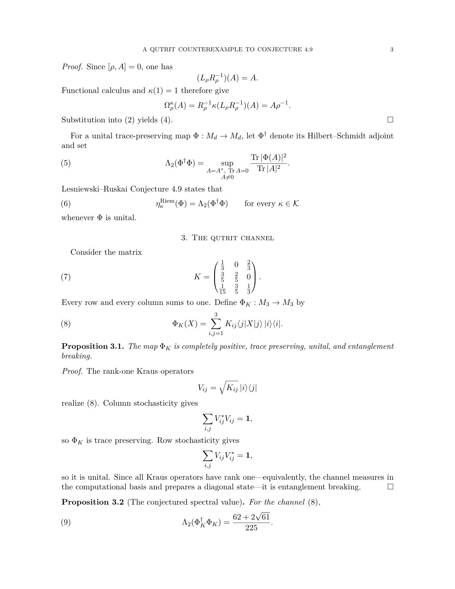
<figcaption class="paper-figure-caption"><b>Fig 2.</b> Low-resolution page preview, page 3</figcaption>
</figure>
<figure class="paper-figure-card">
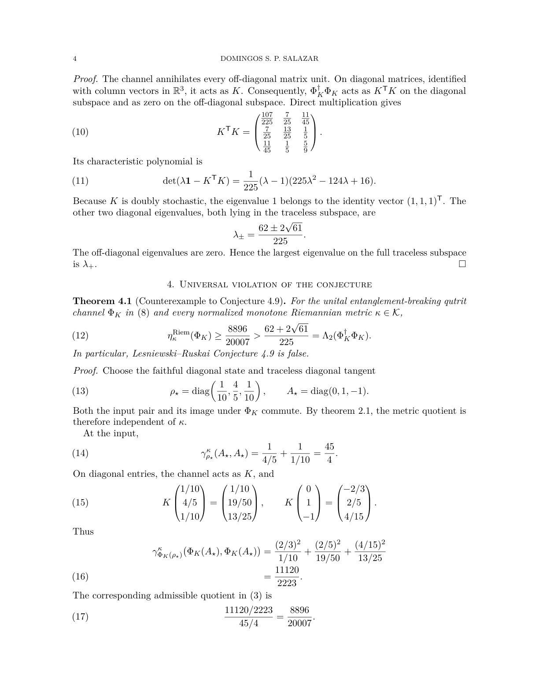
<figcaption class="paper-figure-caption"><b>Fig 3.</b> Low-resolution page preview, page 4</figcaption>
</figure>
<figure class="paper-figure-card">
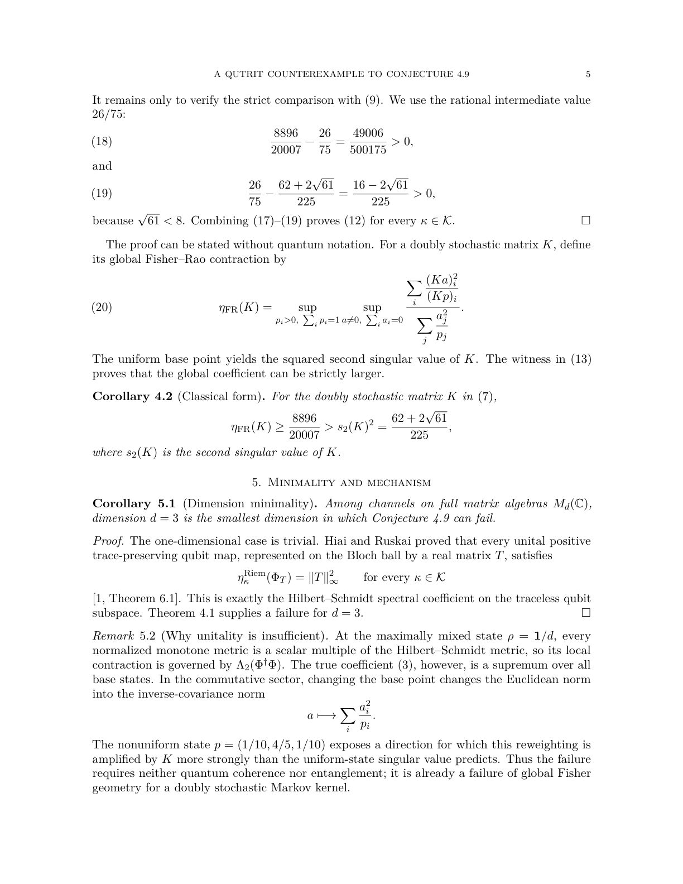
<figcaption class="paper-figure-caption"><b>Fig 4.</b> Low-resolution page preview, page 5</figcaption>
</figure>
<figure class="paper-figure-card">
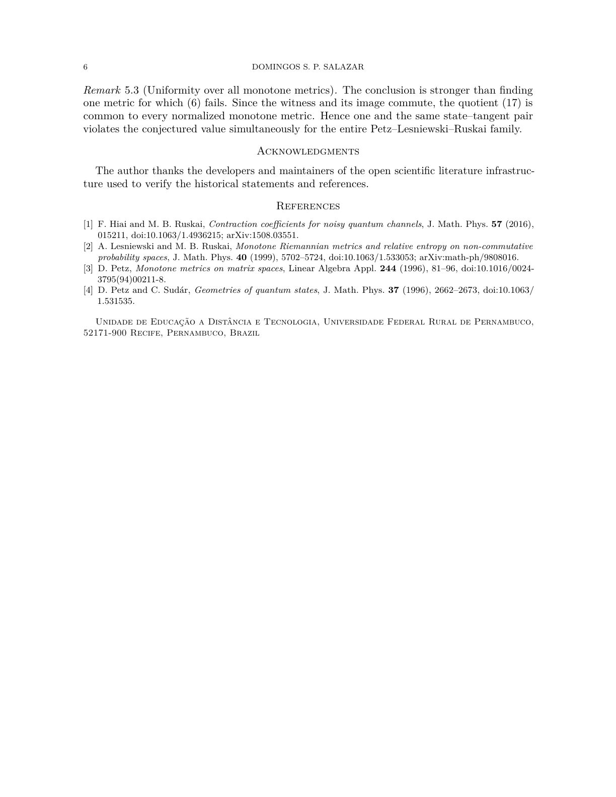
<figcaption class="paper-figure-caption"><b>Fig 5.</b> Low-resolution page preview, page 6</figcaption>
</figure>
</div>

<p><strong>Summary.</strong> This paper disproves a conjecture relating two key measures of quantum channel contraction ($\eta_{	ext{Riem}}^{\kappa}(\Phi)$ and $\Lambda_2(\Phi^\dagger\Phi)$). Using an explicit, classical qutrit channel as a counterexample, the authors show that for dimension three, the global metric contraction coefficient can strictly exceed the Hilbert-Schmidt norm bound. This establishes that dimension three is the minimal size where this geometric inequality fails.</p>
<p><strong>Why it may be interesting.</strong> This work provides a concrete boundary condition violation in quantum process characterization, which has implications for understanding geometric structures (like Fisher information) associated with quantum operations beyond the qubit level.</p>
<details>
<summary>Detailed structure</summary>
<p><strong>Main problem.</strong> The paper aims to disprove Lesniewski and Ruskai's Conjecture 4.9, which relates the contraction coefficient of a monotone Riemannian metric under a unital stochastic map ($\eta_{	ext{Riem}}^{\kappa}(\Phi)$) to the Hilbert-Schmidt norm on the traceless subspace ($\Lambda_2(\Phi^\dagger\Phi)$).</p>
<p><strong>Main result.</strong> The conjecture is disproved by constructing an explicit counterexample using an entanglement-breaking qutrit channel, showing that $\eta_{	ext{Riem}}^{\kappa}(\Phi) > \Lambda_2(\Phi^\dagger\Phi)$.</p>
<p><strong>Method.</strong> The authors use detailed calculations involving a specific doubly stochastic $3	imes3$ matrix to define the counterexample channel and establish the strict inequality between the two quantities.</p>
<p><strong>Model / system.</strong> The study concerns quantum channels ($\Phi$) acting on density matrices of qutrits ($M_3(\mathbb{C})$). The metric is defined over normalized monotone Riemannian metrics, and the failure is demonstrated using a classical channel structure.</p>
<p><strong>Key observables.</strong> $\eta_{	ext{Riem}}^{\kappa}(\Phi)$ (global metric contraction coefficient) and $\Lambda_2(\Phi^\dagger\Phi)$ (squared Hilbert-Schmidt norm on the traceless subspace).</p>
<p><strong>Important parameters / regimes.</strong> The dimension $d=3$ is highlighted as minimal for this failure, contrasting with the qubit case ($d=2$) where the identity holds.</p>
<p><strong>Assumptions / limitations.</strong> The counterexample relies on a faithful diagonal state and a commuting traceless tangent vector to simplify the metric quotient calculation.</p>
<p><strong>Paper structure.</strong> The paper introduces Conjecture 4.9, presents the necessary mathematical framework involving monotone metrics, derives the explicit counterexample using a doubly stochastic qutrit channel, and concludes by proving that dimension three is minimal for this failure.</p>
</details>
<details>
<summary>Abstract</summary>
<p>Lesniewski and Ruskai conjectured that the contraction coefficient of every monotone Riemannian metric under a unital stochastic map equals the Hilbert--Schmidt contraction on the traceless subspace. We disprove the conjecture with an explicit entanglement-breaking qutrit channel induced by a doubly stochastic $3\times3$ matrix. A faithful diagonal state and a commuting traceless tangent give, simultaneously for every normalized monotone metric, the exact lower bound $η^{\mathrm{Riem}}_κ(Φ_K)\ge 8896/20007>(62+2\sqrt{61})/225=Λ_2(Φ_K^{\dagger}Φ_K)$. The counterexample is entirely classical on a maximal abelian subalgebra. A theorem of Hiai and Ruskai establishes the conjectured identity for all unital qubit maps, so dimension three is minimal among full matrix algebras.</p>
</details>
<p><sub><a href="#top">↑ back to top</a></sub></p>

<p><a id="paper-2608.16727"></a></p>
<h3 id="asymptotic-analysis-of-a-fredholm-determinant-occurring-in-the-description-of-the-dynamical-correlation-functions-of-the-lieb-liniger-bose-gas"><a href="http://arxiv.org/abs/2608.16727v1">Asymptotic analysis of a Fredholm determinant occurring in the description of the dynamical correlation functions of the Lieb--Liniger Bose gas</a></h3>
<p><strong>Authors:</strong> Frank Göhmann, Karol K. Kozlowski, Mikhail D. Minin<br>
<strong>Type:</strong> theory · <strong>Category:</strong> statistical mechanics · <strong>PDF:</strong> <a href="https://arxiv.org/pdf/2608.16727v1">https://arxiv.org/pdf/2608.16727v1</a><br>
<strong>Analysis basis:</strong> full PDF text, analyzed in chunks
<strong>Topic relevance:</strong> <code>Keldysh / 2PI / non-Gaussian methods</code> <strong>1/5</strong> · <code>non-equilibrium universality</code> <strong>1/5</strong></p>
<div class="figure-strip-hint">↔ Scroll figures horizontally</div>
<div class="paper-figures-scroll">
<figure class="paper-figure-card">
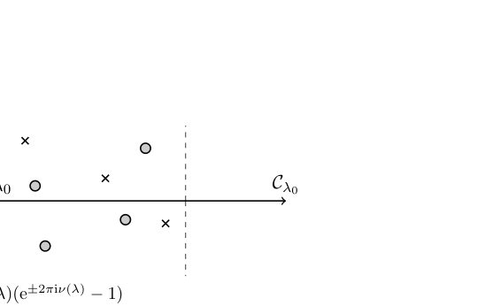
<figcaption class="paper-figure-caption"><b>Fig 1.</b> Figure 4: Those poles of L′ ℓ(λ) that are roots of 1 + ϑ(λ)(e2πiν(λ) −1) are marked by crosses, while those poles of L′ r(λ) that are roots of 1 + ϑ(λ)(e−2πiν(λ) −1) are marked by circles. Here we sketch the case when all poles of L′ ℓ(λ) and L′ r(λ) are away from the real axis. Note that the poles are finite in number and located in a compact subset of Ω.</figcaption>
</figure>
<figure class="paper-figure-card">
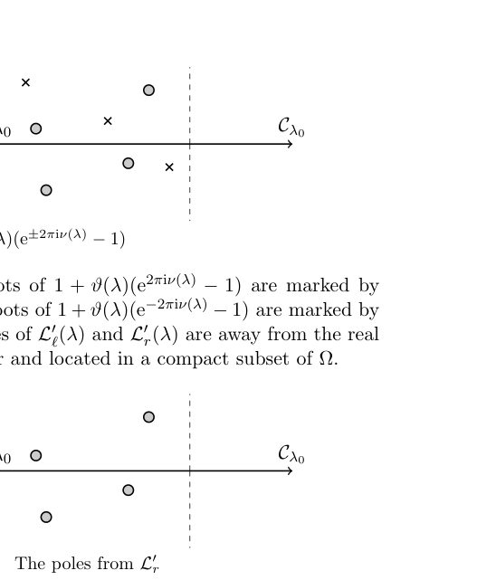
<figcaption class="paper-figure-caption"><b>Fig 2.</b> Figure 5: ‘The poles’, i.e., those points in Ωthat are poles of L′(·|λ0) but not of ϑ.</figcaption>
</figure>
<figure class="paper-figure-card">
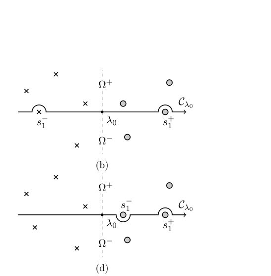
<figcaption class="paper-figure-caption"><b>Fig 3.</b> Figure 6: Schematic illustration of the contour Cλ0 for the case of two poles on the real axis considered in Theorem 2. In Figures 6c and 6d, the relative position of the poles (s− 1 &lt; s+ 1 or s− 1 &gt; s+ 1 ) does not matter (given that conditions (2.15), (2.16) are fulfilled).</figcaption>
</figure>
<figure class="paper-figure-card">
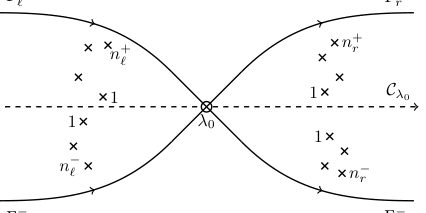
<figcaption class="paper-figure-caption"><b>Fig 4.</b> Figure 8: (a) Definition of the matrix Υ in terms of Ξ and M± ℓ/r; (b) the enumerated poles of Υ stemming from the matrices M± ℓ/r in the corresponding regions.</figcaption>
</figure>
<figure class="paper-figure-card">
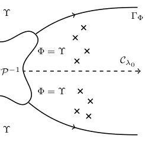
<figcaption class="paper-figure-caption"><b>Fig 5.</b> Figure 11: Definition of the matrix Φ and of the oriented contour ΓΦ.</figcaption>
</figure>
</div>

<p><strong>Summary.</strong> This paper develops a sophisticated asymptotic analysis technique to evaluate Fredholm determinants arising from the Lieb-Liniger Bose gas. By mapping the problem onto a matrix Riemann-Hilbert problem, the authors derive precise large-$x$ expansions for correlation functions. This provides crucial theoretical tools for understanding quantum dynamics in integrable many-body systems.</p>
<p><strong>Why it may be interesting.</strong> This work provides powerful, rigorous mathematical tools for calculating correlation functions in integrable quantum systems, which is highly relevant to understanding non-equilibrium dynamics and thermalization in many-body physics.</p>
<details>
<summary>Detailed structure</summary>
<p><strong>Main problem.</strong> The paper performs a large-$x$ asymptotic analysis of a Fredholm determinant associated with an integrable integral operator.</p>
<p><strong>Main result.</strong> It derives explicit asymptotic expansions for the Fredholm determinant, accounting for leading exponential decay, logarithmic corrections, and constant terms based on the location of poles.</p>
<p><strong>Method.</strong> The analysis is fundamentally based on solving a matrix Riemann-Hilbert problem using non-linear steepest descent methods and saddle-point approximations in the complex plane.</p>
<p><strong>Model / system.</strong> The context is the Lieb–Liniger Bose gas, allowing the calculation of its dynamical correlation functions at finite temperature. The mathematical machinery involves an integrable integral operator with a generalized sine kernel.</p>
<p><strong>Key observables.</strong> Dynamical and equilibrium correlation functions; the Fredholm determinant $\det R (	ext{id} + V)$.</p>
<p><strong>Important parameters / regimes.</strong> The large parameter $x$ (acting as a distance variable), functional parameters ($u, \vartheta, g, 
u$), and temperature/coupling constant regimes.</p>
<p><strong>Assumptions / limitations.</strong> The analysis relies on the existence of saddle points ($\lambda_0$) and poles ($S$) in the complex plane, and involves systematic handling of residues from the RHP factorization.</p>
<p><strong>Figures summary.</strong> Figures illustrate the integration contour $C_{\lambda_0}$ in the complex plane, define the Cauchy transform $C(\lambda)$, and sketch the behavior of exponential terms relative to the saddle point $\lambda_0$.</p>
<p><strong>Paper structure.</strong> The paper systematically develops the analysis by first establishing the connection between the Fredholm determinant and a matrix Riemann-Hilbert problem. It then applies asymptotic methods (steepest descent) based on the number of poles encountered in the complex plane.</p>
</details>
<details>
<summary>Abstract</summary>
<p>We perform a large-$x$ asymptotic analysis of the Fredholm determinant of an integrable integral operator with generalized sine kernel, where $x$ controls the strength of the oscillations along the integration contour of the operator and will play the role of the distance variable in applications to the correlation functions of integrable quantum systems. Our generalized sine kernel involves a number of functional parameters that will allow us to adapt it to the analysis of the dynamical correlation functions of the Lieb--Liniger model at finite temperature and for all positive values of the coupling constant. It will also allow us to consider a class of equilibrium correlation functions that are governed by generalized Gibbs ensembles. Our work is based on the analysis of a matrix Riemann--Hilbert problem that is canonically connected with our integrable integral operator.</p>
</details>
<p><sub><a href="#top">↑ back to top</a></sub></p>

<p><a id="paper-2608.15161"></a></p>
<h3 id="exact-and-efficient-circuit-construction-for-block-encoding-matrix-polynomials"><a href="http://arxiv.org/abs/2608.15161v1">Exact and Efficient Circuit Construction for Block Encoding Matrix Polynomials</a></h3>
<p><strong>Authors:</strong> Taehee Ko<br>
<strong>Type:</strong> theory · <strong>Category:</strong> quantum information and computing · <strong>PDF:</strong> <a href="https://arxiv.org/pdf/2608.15161v1">https://arxiv.org/pdf/2608.15161v1</a><br>
<strong>Analysis basis:</strong> full PDF text, analyzed in chunks
<strong>Topic relevance:</strong> <code>analog quantum simulation</code> <strong>1/5</strong> · <code>quantum measurements</code> <strong>1/5</strong></p>
<div class="figure-strip-hint">↔ Scroll figures horizontally</div>
<div class="paper-figures-scroll">
<figure class="paper-figure-card">

<figcaption class="paper-figure-caption"><b>Fig 1.</b> FIG. 1: Execution time for the exact QSP circuit construction as a function of the polynomial degree d = 2m. The solid blue line denotes the mean empirical execution time over 10 independent random trials, with error bars indicating the absolute minimum and maximum times recorded for each degree. The dashed black line illustrates the theoretical O(d log d) asymptotic scaling.</figcaption>
</figure>
</div>

<p><strong>Summary.</strong> This paper presents a novel, efficient algorithm to construct quantum circuits that exactly implement the block encoding of matrix polynomials. By achieving an O(d log d) classical time complexity, it significantly improves upon previous methods for tasks like Hamiltonian simulation and general function evaluation in quantum computing.</p>
<p><strong>Why it may be interesting.</strong> This work provides concrete algorithmic tools for implementing complex quantum operations derived from polynomial functions of Hamiltonians, which is fundamental for simulating dynamics in many-body systems or realizing specific quantum gates.</p>
<details>
<summary>Detailed structure</summary>
<p><strong>Main problem.</strong> The primary goal is to develop an exact and efficient circuit construction method for block encoding matrix polynomials of Hermitian matrices.</p>
<p><strong>Main result.</strong> The authors propose a direct algorithm achieving near-optimal classical time complexity of O(d log d) for constructing these circuits, applicable to both Hamiltonian simulation and general block encoding models.</p>
<p><strong>Method.</strong> The approach uses Quantum Signal Processing (QSP) principles combined with a diagonal block encoding technique. This involves calculating required unitary components using controlled rotations derived from state preparation algorithms.</p>
<p><strong>Model / system.</strong> The work focuses on constructing unitaries $U^{(C)}_{BE}$ that implement the block encoding of matrix polynomials, such as $f_d(e^{iH})$ or $p_d(H)$, where $H$ is a Hermitian operator. The framework is general and applies to various quantum state preparation tasks.</p>
<p><strong>Key observables.</strong> The key observable is the resulting unitary circuit $U^{(C)}_{BE}$ itself, which must exactly realize $  ext{diag}(f_d(U))$ when projected onto specific ancilla states.</p>
<p><strong>Important parameters / regimes.</strong> The target polynomial degree $d$ is the most critical parameter, determining the complexity and size of the required circuit.</p>
<p><strong>Assumptions / limitations.</strong> The method assumes that necessary phase factors can be calculated stably without relying on parity constraints, which was a limitation in prior work. It also relies on established techniques for amplitude encoding via controlled rotations.</p>
<p><strong>Figures summary.</strong> Figure 1 empirically demonstrates that the execution time required to construct the QSP circuit scales as $O(d \log d)$ when plotted against the polynomial degree $d$.</p>
<p><strong>Paper structure.</strong> The paper introduces the problem of block encoding, develops a general diagonal block encoding lemma using controlled rotations (UCRs), and then applies this framework to derive explicit constructions for polynomials related to Hamiltonian simulation and Chebyshev polynomials.</p>
</details>
<details>
<summary>Abstract</summary>
<p>We propose a direct and stable circuit compiling algorithm that explicitly and exactly constructs block encodings of matrix polynomials for Hermitian matrices. In a unified framework, our algorithm is directly applicable to both standard input models: block encoding and Hamiltonian simulation. For a target polynomial of degree $d$, our classical algorithm achieves a near-optimal time complexity of $\mathcal{O}(d\log d)$. Numerical results confirm this asymptotic scaling for polynomial degrees up to $10^7$ in about a minute on a standard CPU. We achieve this by developing a general-purpose diagonal block encoding of function values, which bridges standard quantum-state preparation techniques with an interpolation-based QSP framework.</p>
</details>
<p><sub><a href="#top">↑ back to top</a></sub></p>

<p><a id="paper-2608.16520"></a></p>
<h3 id="non-invertible-lattice-1-form-symmetries-for-non-abelian-topological-order"><a href="http://arxiv.org/abs/2608.16520v1">Non-invertible Lattice 1-Form Symmetries for Non-Abelian Topological Order</a></h3>
<p><strong>Authors:</strong> Rafael Flores-Calderón, Frank Pollmann, Michael Knap<br>
<strong>Type:</strong> theory · <strong>Category:</strong> strongly correlated electrons · <strong>PDF:</strong> <a href="https://arxiv.org/pdf/2608.16520v1">https://arxiv.org/pdf/2608.16520v1</a><br>
<strong>Analysis basis:</strong> full PDF text, analyzed in chunks
<strong>Topic relevance:</strong> <code>analog quantum simulation</code> <strong>1/5</strong> · <code>quantum measurements</code> <strong>1/5</strong></p>
<div class="figure-strip-hint">↔ Scroll figures horizontally</div>
<div class="paper-figures-scroll">
<figure class="paper-figure-card">

<figcaption class="paper-figure-caption"><b>Fig 1.</b> FIG. 1. Illustration of non-invertible higher-form sym- metries. String-net picture of a torus ground state of a quantum double model with non-Abelian group G visualized as a condensate of closed magnetic strings (thin gray lines). The thick colored ribbons represent the non-invertible 1-form symmetry operators studied in this work. Electric Wilson loops W Γ(ρ) are labeled by irreducible representations Γ of G, magnetic ’t Hooft loops T C(σ) by conjugacy classes C, and dyonic operators KCR(τ) by a conjugacy class C and an irreducible representation R of the corresponding central- izer. Non-contractible loops connect distinct ground states (see Wilson loop as an example).</figcaption>
</figure>
<figure class="paper-figure-card">

<figcaption class="paper-figure-caption"><b>Fig 2.</b> FIG. 3. Structure of the ground state wave function. a) Ground state wavefunction for the quantum double model in the G basis; 1 is the identity element, and all group elements are summed over. b) Detailed signs of a lattice with one g ∈G dual lattice loop. c) When two loops g, h intersect, the Gauss law allows for transmutation of the inner paths into different group elements k, f as long as gk = hf.</figcaption>
</figure>
<figure class="paper-figure-card">

<figcaption class="paper-figure-caption"><b>Fig 3.</b> FIG. 5. Illustration of non-Abelian fusion of electric 1-form symmetries For a non-Abelian group G two Wilson loops labelled by irreps of the group Γ, ˜Γ fuse into multiple channels, see Eq. (24). The multiplicity of a given channel Γ′</figcaption>
</figure>
<figure class="paper-figure-card">

<figcaption class="paper-figure-caption"><b>Fig 4.</b> FIG. 6. Geometry of the ribbon and control opera- tion. Top: A ribbon ρ(z, z′) is shown in orange shade. The blue sites z = (s, p), z′ = (s′, p′) are defined as the endpoint sites of the ribbon. Empty circles denote plaquette positions that the ribbon touches, colored circles denote the vertices. Orange lines denote the sites of the ribbon composed of an interior vertex and a plaquette. The ribbon has associated direct lattice edges x1, x2, x3 and dual lattice edges y1, y2, y3. Bottom: Action of the control operation CX1,2′</figcaption>
</figure>
<figure class="paper-figure-card">

<figcaption class="paper-figure-caption"><b>Fig 5.</b> FIG. 7. Magnetic, electric and dyonic 1-form symmetries. Schematic illustration of the three types of non-contractible 1-form operators on the torus for the quantum double. Left: The magnetic symmetry operator T C x,y carries a magnetic flux C ∈Class(G) and acts along a loop whose dual lattice path is indicated by the dashed blue line. Middle: The electric 1- form symmetry operator W Γ x,y acts only in the direct lattice links, indicated by the orange line. Its charges are irreducible representations Γ = Rep(G) of the group. Right: The general dyonic 1-form symmetry operator KCR x,y carries both a magnetic flux C and an electric charge R ∈Rep(ZC) is defined on a non-trivial ribbon. Both...</figcaption>
</figure>
</div>

<p><strong>Summary.</strong> This paper develops a rigorous framework to describe non-Abelian topological order using higher-form symmetries, specifically focusing on Kitaev quantum double lattice models. By constructing electric, magnetic, and dyonic 1-form operators, the authors provide an operator language that diagnoses the system's topological ground state degeneracy. This work offers a microscopic realization of spontaneous breaking of non-invertible symmetries.</p>
<p><strong>Why it may be interesting.</strong> The explicit construction of diagnostic operators for non-Abelian order provides a powerful theoretical tool to characterize exotic quantum phases that are relevant for fault-tolerant quantum computation architectures based on anyons.</p>
<details>
<summary>Detailed structure</summary>
<p><strong>Main problem.</strong> The work aims to precisely characterize non-Abelian topological order by understanding its underlying symmetry structure, specifically involving higher-form symmetries.</p>
<p><strong>Main result.</strong> The paper establishes a concrete microscopic realization of spontaneous non-invertible 1-form symmetry breaking using quantum double lattice models. It provides an operator language for characterizing these complex topological states.</p>
<p><strong>Method.</strong> The authors construct electric, magnetic, and dyonic 1-form operators directly on the lattice fixed point to diagnose the topological Hilbert space structure.</p>
<p><strong>Model / system.</strong> The focus is on Kitaev quantum double lattice models $\mathcal D(G)$ for arbitrary finite non-Abelian groups $G$. The analysis builds upon understanding Abelian prototypes like the Z2 toric code.</p>
<p><strong>Key observables.</strong> Electric Wilson loops ($W_{\Gamma}$), magnetic 't Hooft loops ($T_C$), and dyonic ribbon operators ($K_{CR}$); these form a complete nonlocal diagnostic algebra.</p>
<p><strong>Important parameters / regimes.</strong> The structure depends on the finite non-Abelian group $G$ and its representations $    ext{Rep}(G)$ and conjugacy classes $    ext{Class}(G)$.</p>
<p><strong>Assumptions / limitations.</strong> The analysis assumes that projecting microscopic lattice operators onto the defect-free topological subspace recovers the expected continuum fusion rules.</p>
<p><strong>Figures summary.</strong> Figure 1 illustrates non-invertible higher-form symmetries using string-net pictures on a torus for $D(G)$, labeling the key diagnostic operators. Table I shows eigenvalues for the Z2 toric code ground states.</p>
<p><strong>Paper structure.</strong> The paper progresses from reviewing Abelian prototypes (like the toric code) to defining the necessary non-invertible 1-form symmetry operators for general finite groups $G$. It then constructs these operators on the lattice and derives the resulting topological degeneracy and fusion rules, culminating in a microscopic understanding of spontaneous symmetry breaking.</p>
</details>
<details>
<summary>Abstract</summary>
<p>Higher-form symmetries generalize conventional global symmetries and act on lower-dimensional submanifolds of a quantum system. While Abelian topological phases can be organized by 1-form symmetries that form a group, non-Abelian topological phases based on finite groups require 1-form symmetry operators governed by non-invertible fusion algebras. In this work, we make this statement precise in quantum double lattice models $\mathcal D(G)$ for finite non-Abelian groups $G$. We construct the electric, magnetic, and dyonic 1-form operators directly at the lattice fixed point and show that together they form a complete nonlocal diagnostic algebra for the topological Hilbert space. Using these operators, we explicitly determine the cylinder and torus ground-state subspaces for arbitrary finite $G$. Furthermore, we calculate the microscopic fusion and gluing of the 1-form symmetries and show that their topological deformation properties emerge after projection to the defect-free topological subspace. Our results establish ground states of non-Abelian quantum double models as a concrete microscopic realization of spontaneous non-invertible 1-form symmetry breaking and provide an operator language that may be useful for characterizing such states in quantum processors.</p>
</details>
<p><sub><a href="#top">↑ back to top</a></sub></p>

<p><a id="paper-2608.16783"></a></p>
<h3 id="quantum-simulation-of-qcd-in-axial-gauge"><a href="http://arxiv.org/abs/2608.16783v1">Quantum Simulation of QCD in Axial Gauge</a></h3>
<p><strong>Authors:</strong> Xiaojun Yao<br>
<strong>Type:</strong> theory · <strong>Category:</strong> quantum information and computing · <strong>PDF:</strong> <a href="https://arxiv.org/pdf/2608.16783v1">https://arxiv.org/pdf/2608.16783v1</a><br>
<strong>Analysis basis:</strong> full PDF text, analyzed in chunks
<strong>Topic relevance:</strong> <code>analog quantum simulation</code> <strong>1/5</strong> · <code>quantum measurements</code> <strong>1/5</strong></p>
<div class="figure-strip-hint">↔ Scroll figures horizontally</div>
<div class="paper-figures-scroll">
<figure class="paper-figure-card">

<figcaption class="paper-figure-caption"><b>Fig 1.</b> Low-resolution page preview, page 2</figcaption>
</figure>
<figure class="paper-figure-card">

<figcaption class="paper-figure-caption"><b>Fig 2.</b> Low-resolution page preview, page 3</figcaption>
</figure>
<figure class="paper-figure-card">

<figcaption class="paper-figure-caption"><b>Fig 3.</b> Low-resolution page preview, page 4</figcaption>
</figure>
<figure class="paper-figure-card">

<figcaption class="paper-figure-caption"><b>Fig 4.</b> Low-resolution page preview, page 5</figcaption>
</figure>
<figure class="paper-figure-card">

<figcaption class="paper-figure-caption"><b>Fig 5.</b> Low-resolution page preview, page 6</figcaption>
</figure>
</div>

<p><strong>Summary.</strong> This paper details a method to simulate Quantum Chromodynamics (QCD) on a lattice using a quantum computer approach formulated in the axial gauge. It derives theoretical bounds on the number of qubits and the gate complexity required for time evolution simulations. The results confirm that simulating real-time QCD dynamics is polynomially scalable with system parameters.</p>
<p><strong>Why it may be interesting.</strong> This work directly addresses mapping a complex, non-Abelian field theory onto a digital quantum computer architecture, providing concrete scaling estimates for resource estimation in quantum simulation.</p>
<details>
<summary>Detailed structure</summary>
<p><strong>Main problem.</strong> The primary goal is the quantum simulation of SU(3) non-Abelian gauge theory (QCD) coupled with fundamental fermions in $3+1$ dimensions.</p>
<p><strong>Main result.</strong> The study concludes that the quantum resources required for simulating real-time dynamics of lattice QCD scale polynomially with volume, energy, time, accuracy, and bare Hamiltonian parameters.</p>
<p><strong>Method.</strong> The authors develop a quantum algorithm based on Trotterization, Quantum Fourier Transform (QFT), and Jordan-Wigner transformation to simulate the time evolution governed by the lattice Hamiltonian in axial gauge.</p>
<p><strong>Model / system.</strong> The system is Lattice QCD formulated using the lattice Hamiltonian approach within the axial gauge ($A_a^3 = 0$). The temporal component of the gauge field is analytically solved, and the full Hamiltonian is mapped onto a qubit representation.</p>
<p><strong>Key observables.</strong> Qubit count bound ($16n_A V + 12n_f V$) and gate complexity scaling ($O(n_A^{4/3} V^{4/3}) + O(V^{5/3})$ per Trotter step).</p>
<p><strong>Important parameters / regimes.</strong> Lattice volume ($V$), energy ($E$), accuracy ($\epsilon$), bare coupling ($g$), number of fermion flavors ($n_f$).</p>
<p><strong>Assumptions / limitations.</strong> The simulation relies on the axial gauge condition, and the qubit cost analysis involves bounding states up to a specific energy $E$ with accuracy $\epsilon$.</p>
<p><strong>Paper structure.</strong> The paper first establishes the lattice Hamiltonian in the axial gauge by analytically solving for the temporal gauge field component. It then derives bounds on the required qubit resources based on energy and volume, followed by an analysis of the quantum circuit complexity for time evolution.</p>
</details>
<details>
<summary>Abstract</summary>
<p>We study quantum simulation of SU(3) non-Abelian gauge theory dynamically coupled with fundamental fermions in $3+1$ dimensions by employing the lattice Hamiltonian in axial gauge that avoids Gauss's law constraints. The temporal component of the gauge field is analytically solved in terms of independent field degrees of freedom and a lattice regulated Green's function. The axial gauge condition is trivially maintained in time evolution, even under Trotterization. The gauge field degrees of freedom are expressed in the local field basis and can be efficiently transformed into the canonical conjugate momentum basis by local quantum Fourier transforms. We prove the number of qubits needed for describing all states up to an energy $E$ with an accuracy $ε$ on a lattice of volume $V$ at bare coupling $g$ is bounded as $16n_A V + 12n_f V$, where $n_A \approx \log_2 (\frac{64 E' V^{4/3}}{π^2ε} + \frac{32\sqrt{2}g n_f E'^{1/2} V^{7/6}}{\sqrt{3}π^3ε^{1/2}} ) $ is the number of qubits needed for each independent gauge field per site with a shifted energy $E'$, and $n_f$ denotes the number of fermion flavors. We then analyze a quantum algorithm for time evolution that is based on Trotterization, quantum Fourier transform, and Jordan-Wigner transformation, for which quantum circuits can be explicitly constructed under arbitrary gauge field truncation and digitization. We find the numbers of CNOT and single-qubit rotation gates both scale as $O(n_A^4 V^{4/3}) + O(V^{5/3})$ per Trotter step for fixed $n_f\leq 6$. We conclude that quantum resources needed for simulating real-time dynamics of lattice QCD scale polynomially with volume, energy, time, accuracy, and bare Hamiltonian parameters.</p>
</details>
<p><sub><a href="#top">↑ back to top</a></sub></p>

<p><a id="paper-2608.16724"></a></p>
<h3 id="resolving-the-magnetic-ground-state-and-field-induced-transitions-in-magnetic-dirac-semimetal-candidate-eumnsbmath1145math"><a href="http://arxiv.org/abs/2608.16724v1">Resolving the Magnetic Ground State and Field-Induced Transitions in Magnetic Dirac Semimetal Candidate EuMnSb$_2$</a></h3>
<p><strong>Authors:</strong> Yiu-Fung Chiu, Jian-Rui Soh, Sanjay Sharma, J. Alberto Rodríguez-Velamazán, John Singleton, Eugen Weschke, Oleksandr Prokhnenko, Oksana Zaharko, Dharmalingam Prabhakaran, Stephen J. Blundell, Paul A. Goddard, Andrew T. Boothroyd<br>
<strong>Type:</strong> both · <strong>Category:</strong> strongly correlated electrons · <strong>PDF:</strong> <a href="https://arxiv.org/pdf/2608.16724v1">https://arxiv.org/pdf/2608.16724v1</a><br>
<strong>Analysis basis:</strong> full PDF text, analyzed in chunks
<strong>Topic relevance:</strong> <code>analog quantum simulation</code> <strong>1/5</strong> · <code>quantum measurements</code> <strong>1/5</strong></p>
<div class="figure-strip-hint">↔ Scroll figures horizontally</div>
<div class="paper-figures-scroll">
<figure class="paper-figure-card">

<figcaption class="paper-figure-caption"><b>Fig 1.</b> FIG. 1. Magnetic structures of EuMnSb2 at base temperature from neutron diffraction studies on different samples. Mn moments are red and Eu are blue. (a) Powder sample obtained by crushing Sn-flux-grown crystals [11]. (b) Tetragonal EuMn0.95Sb2 single crystal grown by a stoichiometric self-flux method [15]. (c) Orthorhombic EuMn1.1Sb2 single crystal grown by a floating-zone method [12]. (d) Orthorhombic EuMnSb2 single crystal grown using excess Sb flux [16].</figcaption>
</figure>
<figure class="paper-figure-card">

<figcaption class="paper-figure-caption"><b>Fig 2.</b> Figure 2(a) shows the zero-field c-axis resistivity of our Sn-flux-grown crystal. The resistivity increases strongly with decreasing temperature, confirming that the sample belongs to the semiconducting rather than metallic class of EuMnSb2 crystals [9, 18]. A shoulder in the tempera- ture dependence is observed near TEu1 ≃21 K, consistent with the coupling between charge transport and the suc- cessive magnetic transitions of the Eu sublattice. This overall behaviour agrees with previous transport mea- surements on Sn-flux-grown EuMnSb2 [9, 18]. The temperature dependence of the magnetic suscep- tibility in the range from 2 to 30 K measured along the a, b and c axes is shown in Fig. 2(b)....</figcaption>
</figure>
<figure class="paper-figure-card">

<figcaption class="paper-figure-caption"><b>Fig 3.</b> FIG. 3. Polarisation matrix for 210 reflection measured at 30 K, where only the Mn sublattice is ordered magnetically. Grey bars are calculated from the Mn magnetic structure shown in Fig. 1 with zero ordered moment on Eu.</figcaption>
</figure>
<figure class="paper-figure-card">

<figcaption class="paper-figure-caption"><b>Fig 4.</b> FIG. 2. (a) Temperature dependence of the zero-field resistiv- ity measured with current applied along the c axis, showing semiconducting behaviour. (b) Magnetic susceptibility mea- surement in a field of 1000 Oe applied parallel to the a, b and c axes. The Eu magnetic ordering transition is most clearly observed as a broad peak in the a- and c-axis curves near TEu1 ≃21 K. The b-axis curve exhibits a subtle upturn below TEu2 ≃9 K. (Data shown for H ∥b, c-axis has been detwinned according to the 2:1 ratio.) (c) Unpolarized neutron diffrac- tion data showing the onset of Eu magnetic order as signalled by the growth in intensity of the 300 reflection which is for- bidden by the crystal...</figcaption>
</figure>
<figure class="paper-figure-card">

<figcaption class="paper-figure-caption"><b>Fig 5.</b> FIG. 4. (a) XMCD measured at the Eu M5 edge (1130 eV) at 10 K with pulsed field applied along the b and c axes. (b) Mn L3 edge (640.5 eV) XMCD data along the same directions and same temperature. The off-resonance energies are 1125 eV and 635 eV respectively.</figcaption>
</figure>
</div>

<p><strong>Summary.</strong> This work investigates the intricate magnetic ordering and field response of $ ext{EuMnSb}_2$, a candidate Dirac semimetal. By combining advanced neutron scattering, XMCD, and magnetometry, the authors determine that Eu spins undergo transitions independently of the Mn sublattice at low fields. They model these interactions using an effective Hamiltonian to quantify the coupling between magnetism and electronic topology.</p>
<p><strong>Why it may be interesting.</strong> While focused on condensed matter magnetism, the study of coupled spin systems under external fields and the development of effective Hamiltonians for complex magnetic order parameters are relevant to understanding quantum many-body dynamics in strongly correlated materials.</p>
<details>
<summary>Detailed structure</summary>
<p><strong>Main problem.</strong> The study aims to resolve the magnetic ground state and understand field-induced transitions within the magnetic Dirac semimetal candidate $  ext{EuMnSb}_2$.</p>
<p><strong>Main result.</strong> Magnetic transitions observed below 2 T are attributed solely to changes in Eu spin order, while Mn spins remain largely unaffected. A mean-field model was developed to estimate key Eu--Eu and Eu--Mn exchange interactions.</p>
<p><strong>Method.</strong> The research combines multiple experimental techniques including polarized/unpolarized neutron diffraction, pulsed-field XMCD, magnetometry, and AC transport measurements, supplemented by developing a mean-field theoretical model.</p>
<p><strong>Model / system.</strong> The system is the magnetic topological semimetal $  ext{EuMnSb}_2$, featuring coupled Eu and Mn magnetic sublattices. The modeling involves an effective spin Hamiltonian incorporating nearest-neighbor AFM and FM exchange interactions, along with external fields.</p>
<p><strong>Key observables.</strong> Magnetic structure (via neutron diffraction), magnetization $M(H)$, susceptibility $\chi(T)$, and specific field-induced transitions ($   ext{Hc1},   ext{Hc2}$).</p>
<p><strong>Important parameters / regimes.</strong> Applied magnetic fields up to 30 T; temperatures down to 1.8 K.</p>
<p><strong>Assumptions / limitations.</strong> The Mn sublattice is treated as an effectively rigid background structure (C-type AFM). The mean-field model provides a first approximation of the complex spin interactions.</p>
<p><strong>Figures summary.</strong> Figures compare magnetic structures determined by different methods and highlight field dependence, showing transitions in magnetization curves along $a$ and $c$ axes.</p>
<p><strong>Paper structure.</strong> The paper systematically presents evidence from multiple measurements (neutron diffraction, XMCD, magnetometry) to establish the magnetic structure. It then develops a mean-field model based on these findings to quantify the dominant exchange interactions coupling magnetism and electronic topology.</p>
</details>
<details>
<summary>Abstract</summary>
<p>The magnetic structure of a magnetic topological semimetal EuMnSb$_2$ is investigated in fields up to 30 T using polarized and unpolarized neutron diffraction, pulsed-field x-ray magnetic circular dichroism and pulsed-field magnetometry. We determine the zero-field magnetic structures of the Eu and Mn sublattices, and find that magnetic transitions induced by applied fields below 2 T correspond to changes in the magnetic order of the Eu spins alone without detectable perturbation to the order of the Mn spins. An additional magnetic transition is observed at fields close to the saturation field for the Eu spins. We present a mean-field model which describes key features of the magnetic behavior and allows us to estimate the dominant Eu--Eu and Eu--Mn exchange interactions responsible for the coupling between magnetism and electronic topology.</p>
</details>
<p><sub><a href="#top">↑ back to top</a></sub></p>

<p><a id="paper-2608.15889"></a></p>
<h3 id="resource-efficient-qubo-formulation-for-anchored-currency-arbitrage"><a href="http://arxiv.org/abs/2608.15889v1">Resource-Efficient QUBO Formulation for Anchored Currency Arbitrage</a></h3>
<p><strong>Authors:</strong> Eric A. F. Reinhardt, Adam J. Hauser<br>
<strong>Type:</strong> both · <strong>Category:</strong> quantum information and computing · <strong>PDF:</strong> <a href="https://arxiv.org/pdf/2608.15889v1">https://arxiv.org/pdf/2608.15889v1</a><br>
<strong>Analysis basis:</strong> full PDF text, analyzed in chunks
<strong>Topic relevance:</strong> <code>analog quantum simulation</code> <strong>1/5</strong> · <code>quantum measurements</code> <strong>1/5</strong></p>
<div class="figure-strip-hint">↔ Scroll figures horizontally</div>
<div class="paper-figures-scroll">
<figure class="paper-figure-card">

<figcaption class="paper-figure-caption"><b>Fig 1.</b> Figure 1: Extreme dummy exchange rate matrix with profit inserted. Green indicates an exchange rate was perturbed upward and orange indicates an exchange rate was perturbed downward.</figcaption>
</figure>
<figure class="paper-figure-card">

<figcaption class="paper-figure-caption"><b>Fig 2.</b> Figure 2: Decomposition of the connectivity graph of the QUBO for the example in Fig. 1: column-clique couplings (a) and adjacent-step couplings (b).</figcaption>
</figure>
<figure class="paper-figure-card">

<figcaption class="paper-figure-caption"><b>Fig 3.</b> Figure 3: Decomposition of the connectivity graph (continued): row-uniqueness couplings (a) and the full coupling graph (b).</figcaption>
</figure>
<figure class="paper-figure-card">

<figcaption class="paper-figure-caption"><b>Fig 4.</b> Figure 4: Logical qubit count (a) and physical qubit count after minor-embedding onto the Pegasus-16 graph (b) as a function of the number of currencies, for a maximum cycle length of six.</figcaption>
</figure>
<figure class="paper-figure-card">

<figcaption class="paper-figure-caption"><b>Fig 5.</b> Figure 5: Logical qubit count (a) and physical qubit count after minor-embedding onto the Pegasus-16 graph (b) as a function of maximum cycle length, for 14 currencies.</figcaption>
</figure>
</div>

<p><strong>Summary.</strong> This paper reformulates currency arbitrage detection as a resource-efficient QUBO problem suitable for quantum annealing. The authors introduce novel constraints, such as fixed starting currencies and transaction fees, and employ an 'anchor-gauge reweighting' technique to stabilize the Hamiltonian coefficients. They demonstrate that their encoding is superior in qubit count and accuracy compared to existing methods.</p>
<p><strong>Why it may be interesting.</strong> While focused on finance, the core methodology—mapping a complex combinatorial optimization problem onto a structured QUBO Hamiltonian with rigorous weight derivation—is directly relevant to designing efficient quantum algorithms for general constrained optimization problems in physics simulations.</p>
<details>
<summary>Detailed structure</summary>
<p><strong>Main problem.</strong> The paper addresses the computationally hard problem of finding maximally profitable currency arbitrage cycles by formulating it as a Quadratic Unconstrained Binary Optimization (QUBO) problem.</p>
<p><strong>Main result.</strong> The proposed QUBO encoding requires fewer logical qubits than prior methods and is shown to be the only one tested that recovers the exact fee-adjusted optimum when benchmarked against multiple existing encodings.</p>
<p><strong>Method.</strong> They introduce novel constraints, including cycle anchoring and per-transaction fees, into the QUBO formulation. A key technical step is an 'anchor-gauge reweighting' of exchange rates to compress coefficients for use on quantum annealers.</p>
<p><strong>Model / system.</strong> The model uses a QUBO Hamiltonian ($H = H_c + H_p$) derived from currency log-returns, which can be mapped onto an Ising Hamiltonian suitable for quantum annealing. The system involves multiple currencies and potential trading paths.</p>
<p><strong>Key observables.</strong> Profitability (log-return), number of logical qubits required, score gap relative to the exact optimum, and computational time/reads used in simulated annealing.</p>
<p><strong>Important parameters / regimes.</strong> Penalty weights ($A_{	ext{col}}, A_{	ext{row}}$, etc.), length penalty coefficient ($\gamma$), maximum cycle length ($T$), and the scale mismatch between log-rates and arbitrage profits.</p>
<p><strong>Assumptions / limitations.</strong> The primary assumption is that the problem can be reduced to finding simple, contiguous cycles. They also assume that gauge fixing successfully preserves the optimal cycle structure for hardware implementation.</p>
<p><strong>Figures summary.</strong> Figures illustrate rate perturbations, the decomposition of QUBO couplings (column-clique and adjacent-step), and performance comparisons showing qubit count vs. literature methods.</p>
<p><strong>Paper structure.</strong> The paper builds upon prior work by refining the QUBO formulation to include realistic constraints (anchoring, fees). It derives provably sufficient penalty weights and introduces gauge reweighting for hardware compatibility. Finally, it benchmarks this novel encoding against five previous methods using classical simulation.</p>
</details>
<details>
<summary>Abstract</summary>
<p>Currency arbitrage (CA) involves trading currencies in cycles to exploit discrepancies in market valuations. Quadratic unconstrained binary optimization (QUBO) involves minimizing a quadratic cost (energy) function of binary variables. Previous works have explored the use of QUBO to solve CA problems. We build on these previous works by introducing realistic constraints such as beginning cycles from a held currency and accounting for per-transaction trading fees. We show that this formulation requires fewer logical variables (qubits) than previous QUBO encodings in the literature. We derive provably sufficient penalty weights for its constraint terms. We also introduce an exact anchor-gauge reweighting of the exchange rates that compresses the QUBO coefficient range from the rate scale to the arbitrage scale, addressing the finite analog precision of annealing hardware. We demonstrate the efficacy of this formulation using classical simulated annealing against an exact Held-Karp baseline on the same CPU and show that it can effectively find profitable cycles and account for trading fees. Finally, we benchmark faithful implementations of five prior QUBO encodings at matched sampler budgets and show that the proposed encoding is the only one to recover the exact fee-adjusted optimum.</p>
</details>
<p><sub><a href="#top">↑ back to top</a></sub></p>

<p><a id="paper-2608.16652"></a></p>
<h3 id="a-nuclear-quantum-corrected-machine-learning-potential-reveals-quantum-enhanced-hydrogen-segregation-at-general-grain-boundaries-in-alpha-iron"><a href="http://arxiv.org/abs/2608.16652v1">A nuclear-quantum-corrected machine-learning potential reveals quantum-enhanced hydrogen segregation at general grain boundaries in alpha-iron</a></h3>
<p><strong>Authors:</strong> Kazuma Ito<br>
<strong>Type:</strong> theory · <strong>Category:</strong> numerical methods · <strong>PDF:</strong> <a href="https://arxiv.org/pdf/2608.16652v1">https://arxiv.org/pdf/2608.16652v1</a><br>
<strong>Analysis basis:</strong> full PDF text, analyzed in chunks
<strong>Topic relevance:</strong> <code>Keldysh / 2PI / non-Gaussian methods</code> <strong>1/5</strong></p>
<div class="figure-strip-hint">↔ Scroll figures horizontally</div>
<div class="paper-figures-scroll">
<figure class="paper-figure-card">

<figcaption class="paper-figure-caption"><b>Fig 1.</b> Fig. 1 | Construction of the Fe–H nuclear-quantum-corrected PACE (NQC-PACE). a, Parent Fe–H PACE and representative training configurations spanning strained bulk, H–H pairs, vacancy–H complexes, surfaces, generalised stacking faults and grain boundaries. b, For each H- containing configuration, Fe atoms were fixed and the centroid of each 32-bead H ring polymer was constrained to the original H position during PIMD at 300 K. Physical forces were averaged over beads and time to generate quantum mean-force labels. Black arrows indicate the nuclear-quantum</figcaption>
</figure>
<figure class="paper-figure-card">

<figcaption class="paper-figure-caption"><b>Fig 2.</b> Fig. 2 | NQC-PACE reproduces nuclear quantum effects on hydrogen trapping and H–H interactions across diverse Fe–H environments. a, Hydrogen binding energies obtained with NQC-PACE and the parent PACE combined with mass thermodynamic integration (mass TI) at 300 K for strained bulk, bulk H–H pairs, vacancies, grain boundaries, screw and edge dislocations, and free surfaces. The dashed line denotes perfect agreement; the mean absolute error (MAE) and root-mean-square error (RMSE) shown quantify deviations between the two methods over the full dataset. Their close agreement demonstrates that</figcaption>
</figure>
<figure class="paper-figure-card">

<figcaption class="paper-figure-caption"><b>Fig 3.</b> Fig. 3 | NQC-PACE captures nuclear quantum effects on hydrogen diffusion at the same</figcaption>
</figure>
<figure class="paper-figure-card">

<figcaption class="paper-figure-caption"><b>Fig 4.</b> Fig. 4 | Nuclear quantum effects enhance hydrogen segregation at general grain boundaries. a, Grain-boundary (GB) energy as a function of misorientation angle for general GBs extracted from nanopolycrystalline Fe. Red squares denote the six bicrystal GBs selected for GCMC/MD, and the dashed line indicates the experimental reference. The selected GBs lie within the high-energy range</figcaption>
</figure>
<figure class="paper-figure-card">

<figcaption class="paper-figure-caption"><b>Fig 5.</b> Fig. 5 | Locally expanded OCT-like grain-boundary environments induce anisotropic H vibrational softening and enhance nuclear quantum stabilisation.</figcaption>
</figure>
</div>

<p><strong>Summary.</strong> The authors developed a Nuclear-Quantum-Corrected Machine-Learning Potential (NQC-PACE) for the Fe-H system. This potential incorporates difficult-to-calculate nuclear quantum effects by relabeling an existing MLIP using Path-Integral Molecular Dynamics data. The results demonstrate that these quantum corrections significantly enhance hydrogen segregation at grain boundaries, offering a computationally tractable tool for studying light element behavior in complex materials.</p>
<p><strong>Why it may be interesting.</strong> While focused on condensed matter, the core technique—using high-level quantum dynamics (PIMD) to parameterize and correct a lower-level, computationally efficient MLIP across vast configurational spaces—is a powerful general methodology relevant to simulating complex quantum many-body systems in materials science.</p>
<details>
<summary>Detailed structure</summary>
<p><strong>Main problem.</strong> Accurately simulating hydrogen diffusion and trapping at defects in iron while incorporating computationally demanding nuclear quantum effects (NQE) into large-scale simulations.</p>
<p><strong>Main result.</strong> The developed NQC-PACE potential shows that NQE markedly enhance hydrogen segregation at general grain boundaries, providing a significant improvement over classical potentials.</p>
<p><strong>Method.</strong> A novel framework was created by relabeling the configurational space of an existing Machine-Learning Interatomic Potential (MLIP) using quantum mean forces derived from Path-Integral Molecular Dynamics (PIMD).</p>
<p><strong>Model / system.</strong> The system is hydrogen dissolved in alpha-iron ($\alpha$-Fe), focusing on defects like vacancies, dislocations, and general grain boundaries. The model uses an MLIP trained via the atomic cluster expansion (PACE) and corrected to NQC-PACE.</p>
<p><strong>Key observables.</strong> Hydrogen segregation levels, trapping energies, diffusion coefficients ($D$), and comparison of quantum vs. classical binding sites.</p>
<p><strong>Important parameters / regimes.</strong> Temperature (300 K), light element mass effects (hydrogen), and the configurational space coverage of the parent MLIP.</p>
<p><strong>Assumptions / limitations.</strong> The method assumes that relabeling the configurational space with PIMD-derived quantum mean forces is sufficient to incorporate NQE corrections without requiring additional DFT calculations for every new configuration.</p>
<p><strong>Figures summary.</strong> Figure 1 illustrates the construction pipeline: parent PACE $
ightarrow$ PIMD generation of quantum mean forces $
ightarrow$ final NQC-PACE. Other figures compare trapping energies and diffusion coefficients using different potential formulations.</p>
<p><strong>Paper structure.</strong> The paper introduces the problem (H embrittlement/NQE), details the methodology (PIMD to generate quantum mean forces for MLIP relabeling into NQC-PACE), presents results comparing NQC-PACE against classical potentials, and concludes with implications for large-scale materials simulation.</p>
</details>
<details>
<summary>Abstract</summary>
<p>Atomistic descriptions of hydrogen diffusion and trapping at defects are essential for understanding hydrogen embrittlement. As the lightest solute in metals, hydrogen exhibits nuclear quantum effects that alter these processes even at room temperature. Explicit treatment of such effects is computationally demanding, limiting large-scale simulations of complex environments. Here, we use an Fe-H machine-learning interatomic potential (MLIP) based on the performant implementation of the atomic cluster expansion (PACE), covering diverse Fe-H environments, and relabel the training configurations underpinning its transferability with quantum mean forces from centroid-constrained path-integral molecular dynamics at 300 K. This yields a nuclear-quantum-corrected PACE (NQC-PACE) without additional density functional theory calculations. At parent PACE, NQC-PACE describes nuclear quantum effects on hydrogen trapping at vacancies, dislocations, surfaces and general grain boundaries, H-H interactions, and diffusion in alpha-Fe. Grand-canonical Monte Carlo/molecular dynamics simulations show nuclear quantum effects markedly enhance hydrogen segregation at general grain boundaries and trapping behaviour in closer agreement with experimental trends. This enhancement arises from selective quantum stabilisation of open, anisotropically soft local environments. Our framework uses finite-temperature quantum mean forces to relabel the configurational space covered by an MLIP, enabling large-scale analysis of complex materials where light-element quantum effects matter.</p>
</details>
<p><sub><a href="#top">↑ back to top</a></sub></p>

<p><a id="paper-2608.15732"></a></p>
<h3 id="accessing-gapped-chiral-phase-with-auxiliary-assisted-peps"><a href="http://arxiv.org/abs/2608.15732v1">Accessing Gapped Chiral Phase with Auxiliary-Assisted PEPS</a></h3>
<p><strong>Authors:</strong> Sen Niu, Rui-Zhen Huang<br>
<strong>Type:</strong> theory · <strong>Category:</strong> strongly correlated electrons · <strong>PDF:</strong> <a href="https://arxiv.org/pdf/2608.15732v1">https://arxiv.org/pdf/2608.15732v1</a><br>
<strong>Analysis basis:</strong> full PDF text, analyzed in chunks
<strong>Topic relevance:</strong> <code>methods for driven-dissipative</code> <strong>1/5</strong></p>
<div class="figure-strip-hint">↔ Scroll figures horizontally</div>
<div class="paper-figures-scroll">
<figure class="paper-figure-card">

<figcaption class="paper-figure-caption"><b>Fig 1.</b> Figure 1. Variational energies and correlation functions with and without antichiral auxiliary systems. Variational energy (a) (c) and correlation functions (b) (d) of the optimized infinite PEPS states for both models are presented. The numerically exact and accurate energy density for the the fermionic model and spin model are also presented respectively. In (a)-(b), “Spin Hall” model refers to our proposed model Htot constructed by a spinless Chern insulator and its anti-chiral auxiliary system. “Spinfull” model refers to a two layer of decoupled chiral Chern insulator which can be viewed as a SU(2)- symmetric Hubbard model. For better comparison with the original single layer system, we...</figcaption>
</figure>
<figure class="paper-figure-card">

<figcaption class="paper-figure-caption"><b>Fig 2.</b> Figure 2. Correlation length of the variational states in spin model. (a) Extrapolation of correlation length versus 1/χ. (b) Spectrum of transfer matrix for computing correlation functions with environment dimension χ = 200.</figcaption>
</figure>
<figure class="paper-figure-card">

<figcaption class="paper-figure-caption"><b>Fig 3.</b> Figure 3. Residual physical-auxiliary coupling. (a) Compari- son of spin-spin correlation function between physical-physical and auxiliary-physical. (b) Frobenius norm of the density matrix differ- ence that measures the coupling between the physical and the auxil- iary system.</figcaption>
</figure>
<figure class="paper-figure-card">

<figcaption class="paper-figure-caption"><b>Fig 4.</b> Figure 4. Bipartite entanglement spectrum of the spin state on finite-width cylinders. Variational ˜D = 6 state (with a virtual space V = 0⊕0⊕1</figcaption>
</figure>
<figure class="paper-figure-card">

<figcaption class="paper-figure-caption"><b>Fig 5.</b> Figure 5. Sketch diagram for translation operator actions used in the calculation of entanglement spectrum on a W = 3 cylinder. (a) Full Ty = T aux y T phy y translation for both physical and auxiliary systems. (b) Partial Ty = T phy y translation for only the physical system.</figcaption>
</figure>
</div>

<p><strong>Summary.</strong> The paper presents an auxiliary-assisted PEPS method to overcome the difficulty of simulating gapped chiral phases with finite bond dimensions. By coupling the physical system to its time-reversed partner, it eliminates artificial long-range correlations found in direct representations. This technique successfully validates the description of both fermionic and interacting chiral spin liquids while preserving key topological entanglement signatures.</p>
<p><strong>Why it may be interesting.</strong> This work provides a powerful, practical computational tool (auxiliary embedding) to study highly constrained quantum phases like chiral magnets and superconductors using established tensor network methods, which is crucial for understanding exotic condensed matter states.</p>
<details>
<summary>Detailed structure</summary>
<p><strong>Main problem.</strong> The primary challenge is representing gapped chiral phases using finite bond-dimension PEPS, as direct representations introduce spurious long-range power-law correlations inconsistent with true gapped behavior.</p>
<p><strong>Main result.</strong> An auxiliary-assisted framework successfully bypasses this obstruction by embedding the physical system with a time-reversed partner, yielding clean short-range correlation functions for both free-fermion and interacting chiral models.</p>
<p><strong>Method.</strong> The authors introduce an auxiliary-assisted PEPS formalism where the physical state is enlarged to a non-chiral representation. Physical observables are recovered by tracing out the auxiliary degrees of freedom, allowing the use of standard tensor network techniques like CTMRG.</p>
<p><strong>Model / system.</strong> The study applies to gapped chiral phases, specifically modeling free-fermion Chern insulators and interacting chiral spin liquids (e.g., SU(2) spins on a square lattice). The method involves constructing an enlarged Hamiltonian by coupling the physical system with its time-reversed auxiliary counterpart.</p>
<p><strong>Key observables.</strong> Clean exponential decay of correlation functions, finite transfer-matrix correlation length ($\xi$), and recovery of universal chiral entanglement boundary spectra via layer-resolved momentum projection.</p>
<p><strong>Important parameters / regimes.</strong> Finite bond dimension ($D$), residual coupling strength ($\lambda_i$), and the topological nature of the underlying phase (e.g., SU(2)$_1$ chiral order).</p>
<p><strong>Assumptions / limitations.</strong> The method assumes that the small, residual couplings between the physical and auxiliary systems are weak enough to only affect short-range local quantities, thus preserving low-energy physics.</p>
<p><strong>Figures summary.</strong> Figures compare energy convergence and long-distance correlations for direct vs. auxiliary PEPS setups, showing artifact removal in the latter. Other figures detail entanglement spectra analysis by projecting onto specific momentum sectors on a cylinder.</p>
<p><strong>Paper structure.</strong> The paper first establishes the problem of spurious correlations in chiral PEPS. It then introduces the auxiliary-assisted formalism and applies it to free-fermion and interacting spin models, demonstrating artifact removal via correlation function analysis. Finally, it uses entanglement spectrum analysis by fixing auxiliary momenta to confirm the recovery of universal chiral topological information.</p>
</details>
<details>
<summary>Abstract</summary>
<p>It has been controversial whether infinite projected entangled pair state (PEPS) can faithfully describe chiral gapped phases in two dimensions or not. Finite-bond-dimension PEPS can capture many local and topological properties of chiral phases, but generically develop spurious long-range power-law like correlations. We introduce an auxiliary-assisted framework that bypass this obstruction by embedding the physical chiral system together with an auxiliary time-reversed partner, yielding a non-chiral enlarged representation whose physical chiral sector is recovered with controlled decoupling. For both a free-fermion Chern insulator and an interacting chiral spin liquid, the resulting PEPS show clean gapped correlation functions, and a finite transfer-matrix correlation length, in contrast with the artificial long-range tail of direct chiral PEPS representations. There exist small and negligibly coupling between the physical and auxiliary systems due to the finite entanglement effect, which only affect short-ranged local quantities. Despite the nonchiral enlarged representation, the chiral topological information remains encoded in the entanglement. Using layer-resolved momentum projection, we recover the expected universal chiral entanglement boundary spectrum. Our study provides a practical route to access gapped chiral phases with finite bond-dimension PEPS by changing the representation problem rather than directly studying the chiral pure state.</p>
</details>
<p><sub><a href="#top">↑ back to top</a></sub></p>

<p><a id="paper-2608.15961"></a></p>
<h3 id="chainforge-characterizing-embedding-as-the-bottleneck-in-quantum-annealer-workloads"><a href="http://arxiv.org/abs/2608.15961v1">ChainForge: Characterizing Embedding as the Bottleneck in Quantum Annealer Workloads</a></h3>
<p><strong>Authors:</strong> Kanishka Jayathilake, Cordelia Brumley, Tanner Smith, Ramin Ayanzadeh<br>
<strong>Type:</strong> both · <strong>Category:</strong> quantum information and computing · <strong>PDF:</strong> <a href="https://arxiv.org/pdf/2608.15961v1">https://arxiv.org/pdf/2608.15961v1</a><br>
<strong>Analysis basis:</strong> full PDF text, analyzed in chunks
<strong>Topic relevance:</strong> <code>QC/QI experiment</code> <strong>1/5</strong></p>
<div class="figure-strip-hint">↔ Scroll figures horizontally</div>
<div class="paper-figures-scroll">
<figure class="paper-figure-card">

<figcaption class="paper-figure-caption"><b>Fig 1.</b> Figure 1: Execution models of (a) digital quantum computers and (b) analog quantum annealers, showing their main stages.</figcaption>
</figure>
<figure class="paper-figure-card">

<figcaption class="paper-figure-caption"><b>Fig 2.</b> Figure 2: (a) Stages of the quantum annealing pipeline. (b) Example embedding a problem graph onto a QA hardware graph.</figcaption>
</figure>
<figure class="paper-figure-card">

<figcaption class="paper-figure-caption"><b>Fig 3.</b> Figure 3: Largest embeddable logical graph size (|V|) per topology across three embedding methods. Complete bipartite K127,127 yields |V| = 254, while the 49 × 49 square grid yields |V| = 2401.</figcaption>
</figure>
<figure class="paper-figure-card">

<figcaption class="paper-figure-caption"><b>Fig 4.</b> Figure 3 shows that effective logical capacity strongly depends on workload topology. Sparse local structures map most efficiently onto QA hardware. For example, the square- grid topology reaches 49×49, corresponding to 2401 logical variables. Barabási–Albert graphs also support relatively large problem instances, reaching up to 977 logical variables because they remain globally sparse despite the presence of high degree hubs. In contrast, dense workloads reach the hardware limit much earlier. Fully connected cliques support only 177 logical variables, while Erd˝os–Rényi graphs support 216 logical variables. Complete bipartite graphs and 3-regular</figcaption>
</figure>
<figure class="paper-figure-card">

<figcaption class="paper-figure-caption"><b>Fig 5.</b> Figure 4: Largest embeddable logical graph size (|V|) versus connectivity parameter for three stochastic topologies: Erd˝os- Rényi edge probability p, d-Regular degree d, and Barabási– Albert attachment parameter m. The dashed line marks the clique baseline (|V| = 177).</figcaption>
</figure>
</div>

<p><strong>Summary.</strong> This paper characterizes embedding as the defining bottleneck in Quantum Annealer workloads. Using a new framework, ChainForge, the authors demonstrate that mapping complex problems onto sparse physical hardware severely limits usable capacity and degrades performance fidelity. The findings mandate a shift toward workload-aware co-design between algorithms and quantum hardware architectures.</p>
<p><strong>Why it may be interesting.</strong> This work provides crucial architectural insights into the practical limitations of current quantum hardware, which directly impacts how theoretical models of quantum computation must be adapted for near-term implementation.</p>
<details>
<summary>Detailed structure</summary>
<p><strong>Main problem.</strong> The primary challenge in scaling Quantum Annealers (QAs) is that mapping a logical problem graph onto the hardware's sparse physical connectivity, known as embedding, becomes the dominant system bottleneck.</p>
<p><strong>Main result.</strong> Embedding significantly inflates resource usage and degrades performance; effective QA capacity is highly dependent on workload topology rather than just nominal qubit counts.</p>
<p><strong>Method.</strong> The authors developed ChainForge, a systematic characterization framework that tests diverse workloads across modern QA hardware topologies to quantify embedding overheads.</p>
<p><strong>Model / system.</strong> The system studied is the Quantum Annealer (QA), which operates by evolving an Ising Hamiltonian. The core process involves mapping logical variables onto physical qubits via chains due to hardware sparsity.</p>
<p><strong>Key observables.</strong> Effective hardware capacity, routing overheads, runtime variability, annealing fidelity, and solution quality.</p>
<p><strong>Important parameters / regimes.</strong> Chain length (especially the 95th percentile), chain strength parameter, and the specific topology of the QA hardware (e.g., Pegasus).</p>
<p><strong>Assumptions / limitations.</strong> The study assumes that embedding is not merely a preprocessing step but must be treated as an integral, runtime-affecting bottleneck in the end-to-end quantum computation pipeline.</p>
<p><strong>Figures summary.</strong> Figures illustrate how effective capacity decreases significantly when moving from locally structured workloads (like square grids) to highly connected ones (like cliques), demonstrating the bottleneck effect.</p>
<p><strong>Paper structure.</strong> The paper establishes the problem by defining QA operation and embedding. It then introduces ChainForge, presents systematic characterization results across various graph families, quantifies capacity loss, and concludes by proposing that workload-aware co-design is necessary for future scaling.</p>
</details>
<details>
<summary>Abstract</summary>
<p>Quantum Annealers (QAs) are among the first commercially scaled quantum computing systems designed for large-scale optimization. Unlike digital systems that execute sequences of compiled instructions, QAs operate as analog single-instruction machines that directly evolve an Ising Hamiltonian toward low-energy solutions. To execute an application, the logical problem graph must first be mapped onto the hardware's sparse connectivity via embedding, where logical variables are represented by chains of connected physical qubits. As a result, embedding becomes the dominant system challenge in QAs, shaping whether and how workloads can execute on the machine. Despite its central role, embedding has largely been treated as a preprocessing step rather than a system bottleneck.   In this work, we present ChainForge, the first systems and architecture characterization of embedding in QA workloads. Using diverse workload families and graph topologies on modern QA hardware, we characterize how embedding impacts effective hardware capacity, routing overheads, runtime variability, and solution quality. Our results show that embedding inflates physical resource usage, long chains degrade annealing fidelity and scalability, and heuristic embedders may fail even when valid embeddings exist. We further show that embedding latency can become a runtime bottleneck for dynamic workloads requiring frequent remapping, while nominal qubit counts significantly overestimate the usable capacity of QAs for realistic applications. Overall, our findings establish embedding as the defining workload bottleneck and systems abstraction of QAs, providing architectural insights for future hardware topologies, runtime systems, and workload-aware annealing platforms.</p>
</details>
<p><sub><a href="#top">↑ back to top</a></sub></p>
<hr>
<p>
<a href="index.html">← Index</a>
 · <a href="papers_05.html">← Previous</a> · <a href="papers_07.html">Next →</a>
</p>
<hr>

</body>
</html>
